==SpringBootWeb案例==1
前面我们已经讲解了Web前端开发的基础知识，也讲解了Web后端开发的基础(HTTP协议、请求响应)，并且也讲解了数据库MySQL，以及通过Mybatis框架如何来完成数据库的基本操作。 那接下来，我们就通过一个案例，来将前端开发、后端开发、数据库整合起来。 而这个案例呢，就是我们前面提到的Tlias智能学习辅助系统。
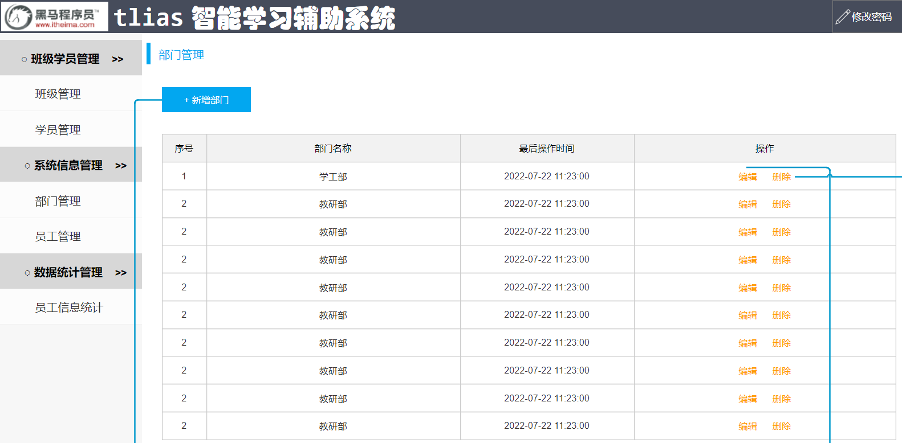
在这个案例中，前端开发人员已经将前端工程开发完毕了。 我们需要做的，就是参考接口文档完成后端功能的开发，然后结合前端工程进行联调测试即可。
完成后的成品效果展示：
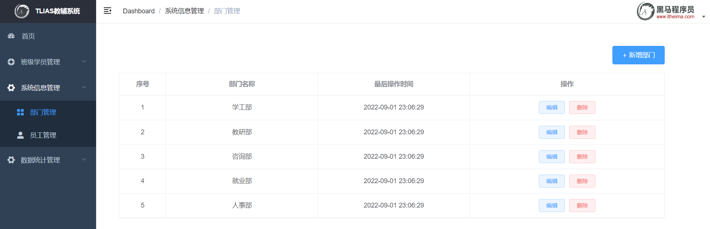
今天的主要内容如下：
- 准备工作
- 部门管理
- 员工管理
下面我们就进入到今天的第1个内容准备工作的学习。
1. 准备工作
准备工作的学习，我们先从"需求"和"环境搭建"开始入手。
1.1 需求&环境搭建
1.1.1 需求说明
1、部门管理
部门管理功能开发包括：
- 查询部门列表
- 删除部门
- 新增部门
- 修改部门
2、员工管理

员工管理功能开发包括：
- 查询员工列表(分页、条件)
- 删除员工
- 新增员工
- 修改员工
1.1.2 环境搭建
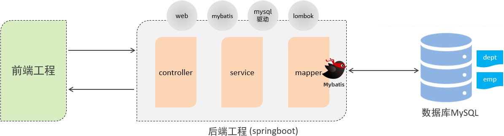
步骤：
- 准备数据库表(dept、emp)
- 创建springboot工程，引入对应的起步依赖（web、mybatis、mysql驱动、lombok）
- 配置文件application.properties中引入mybatis的配置信息，准备对应的实体类
- 准备对应的Mapper、Service(接口、实现类)、Controller基础结构
第1步：准备数据库表
-- 部门管理
create table dept(
id int unsigned primary key auto_increment comment '主键ID',
name varchar(10) not null unique comment '部门名称',
create_time datetime not null comment '创建时间',
update_time datetime not null comment '修改时间'
) comment '部门表';
-- 部门表测试数据
insert into dept (id, name, create_time, update_time) values(1,'学工部',now(),now()),(2,'教研部',now(),now()),(3,'咨询部',now(),now()), (4,'就业部',now(),now()),(5,'人事部',now(),now());
-- 员工管理(带约束)
create table emp (
id int unsigned primary key auto_increment comment 'ID',
username varchar(20) not null unique comment '用户名',
password varchar(32) default '123456' comment '密码',
name varchar(10) not null comment '姓名',
gender tinyint unsigned not null comment '性别, 说明: 1 男, 2 女',
image varchar(300) comment '图像',
job tinyint unsigned comment '职位, 说明: 1 班主任,2 讲师, 3 学工主管, 4 教研主管, 5 咨询师',
entrydate date comment '入职时间',
dept_id int unsigned comment '部门ID',
create_time datetime not null comment '创建时间',
update_time datetime not null comment '修改时间'
) comment '员工表';
-- 员工表测试数据
INSERT INTO emp
(id, username, password, name, gender, image, job, entrydate,dept_id, create_time, update_time) VALUES
(1,'jinyong','123456','金庸',1,'1.jpg',4,'2000-01-01',2,now(),now()),
(2,'zhangwuji','123456','张无忌',1,'2.jpg',2,'2015-01-01',2,now(),now()),
(3,'yangxiao','123456','杨逍',1,'3.jpg',2,'2008-05-01',2,now(),now()),
(4,'weiyixiao','123456','韦一笑',1,'4.jpg',2,'2007-01-01',2,now(),now()),
(5,'changyuchun','123456','常遇春',1,'5.jpg',2,'2012-12-05',2,now(),now()),
(6,'xiaozhao','123456','小昭',2,'6.jpg',3,'2013-09-05',1,now(),now()),
(7,'jixiaofu','123456','纪晓芙',2,'7.jpg',1,'2005-08-01',1,now(),now()),
(8,'zhouzhiruo','123456','周芷若',2,'8.jpg',1,'2014-11-09',1,now(),now()),
(9,'dingminjun','123456','丁敏君',2,'9.jpg',1,'2011-03-11',1,now(),now()),
(10,'zhaomin','123456','赵敏',2,'10.jpg',1,'2013-09-05',1,now(),now()),
(11,'luzhangke','123456','鹿杖客',1,'11.jpg',5,'2007-02-01',3,now(),now()),
(12,'hebiweng','123456','鹤笔翁',1,'12.jpg',5,'2008-08-18',3,now(),now()),
(13,'fangdongbai','123456','方东白',1,'13.jpg',5,'2012-11-01',3,now(),now()),
(14,'zhangsanfeng','123456','张三丰',1,'14.jpg',2,'2002-08-01',2,now(),now()),
(15,'yulianzhou','123456','俞莲舟',1,'15.jpg',2,'2011-05-01',2,now(),now()),
(16,'songyuanqiao','123456','宋远桥',1,'16.jpg',2,'2007-01-01',2,now(),now()),
(17,'chenyouliang','123456','陈友谅',1,'17.jpg',NULL,'2015-03-21',NULL,now(),now());
第2步：创建一个SpringBoot工程，选择引入对应的起步依赖（web、mybatis、mysql驱动、lombok） (版本选择2.7.5版本，可以创建完毕之后，在pom.xml文件中更改版本号)

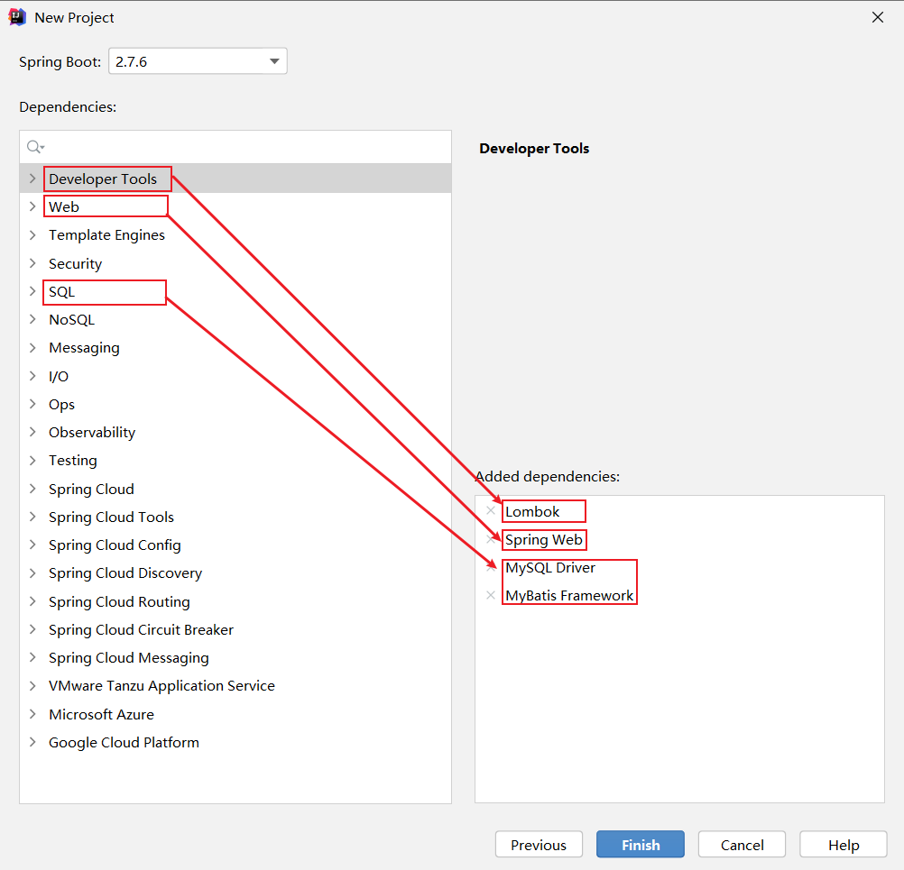
生成的pom.xml文件：
<?xml version="1.0" encoding="UTF-8"?>
<project xmlns="http://maven.apache.org/POM/4.0.0" xmlns:xsi="http://www.w3.org/2001/XMLSchema-instance"
xsi:schemaLocation="http://maven.apache.org/POM/4.0.0 https://maven.apache.org/xsd/maven-4.0.0.xsd">
<modelVersion>4.0.0</modelVersion>
<parent>
<groupId>org.springframework.boot</groupId>
<artifactId>spring-boot-starter-parent</artifactId>
<version>2.7.5</version>
<relativePath/>
</parent>
<groupId>com.itheima</groupId>
<artifactId>tlias-web-management</artifactId>
<version>0.0.1-SNAPSHOT</version>
<name>tlias-web-management</name>
<description>Demo project for Spring Boot</description>
<properties>
<java.version>11</java.version>
</properties>
<dependencies>
<dependency>
<groupId>org.springframework.boot</groupId>
<artifactId>spring-boot-starter-web</artifactId>
</dependency>
<dependency>
<groupId>org.mybatis.spring.boot</groupId>
<artifactId>mybatis-spring-boot-starter</artifactId>
<version>2.3.0</version>
</dependency>
<dependency>
<groupId>com.mysql</groupId>
<artifactId>mysql-connector-j</artifactId>
<scope>runtime</scope>
</dependency>
<dependency>
<groupId>org.projectlombok</groupId>
<artifactId>lombok</artifactId>
<optional>true</optional>
</dependency>
<dependency>
<groupId>org.springframework.boot</groupId>
<artifactId>spring-boot-starter-test</artifactId>
<scope>test</scope>
</dependency>
</dependencies>
<build>
<plugins>
<plugin>
<groupId>org.springframework.boot</groupId>
<artifactId>spring-boot-maven-plugin</artifactId>
<configuration>
<excludes>
<exclude>
<groupId>org.projectlombok</groupId>
<artifactId>lombok</artifactId>
</exclude>
</excludes>
</configuration>
</plugin>
</plugins>
</build>
</project>
创建项目工程目录结构：

第3步：配置文件application.properties中引入mybatis的配置信息，准备对应的实体类
- application.properties （直接把之前项目中的复制过来）
#数据库连接
spring.datasource.driver-class-name=com.mysql.cj.jdbc.Driver
spring.datasource.url=jdbc:mysql://localhost:3306/tlias
spring.datasource.username=root
spring.datasource.password=1234
#开启mybatis的日志输出
mybatis.configuration.log-impl=org.apache.ibatis.logging.stdout.StdOutImpl
#开启数据库表字段 到 实体类属性的驼峰映射
mybatis.configuration.map-underscore-to-camel-case=true
- 实体类
/*部门类*/
@Data
@NoArgsConstructor
@AllArgsConstructor
public class Dept {
private Integer id;
private String name;
private LocalDateTime createTime;
private LocalDateTime updateTime;
}
/*员工类*/
@Data
@NoArgsConstructor
@AllArgsConstructor
public class Emp {
private Integer id;
private String username;
private String password;
private String name;
private Short gender;
private String image;
private Short job;
private LocalDate entrydate;
private Integer deptId;
private LocalDateTime createTime;
private LocalDateTime updateTime;
}
第4步：准备对应的Mapper、Service(接口、实现类)、Controller基础结构
数据访问层：
- DeptMapper
package com.itheima.mapper;
import org.apache.ibatis.annotations.Mapper;
@Mapper
public interface DeptMapper {
}
- EmpMapper
package com.itheima.mapper;
import org.apache.ibatis.annotations.Mapper;
@Mapper
public interface EmpMapper {
}
业务层：
- DeptService
package com.itheima.service;
//部门业务规则
public interface DeptService {
}
- DeptServiceImpl
package com.itheima.service.impl;
import lombok.extern.slf4j.Slf4j;
import org.springframework.stereotype.Service;
//部门业务实现类
@Slf4j
@Service
public class DeptServiceImpl implements DeptService {
}
- EmpService
package com.itheima.service;
//员工业务规则
public interface EmpService {
}
- EmpServiceImpl
package com.itheima.service.impl;
import com.itheima.service.EmpService;
import lombok.extern.slf4j.Slf4j;
import org.springframework.stereotype.Service;
//员工业务实现类
@Slf4j
@Service
public class EmpServiceImpl implements EmpService {
}
控制层：
- DeptController
package com.itheima.controller;
import org.springframework.web.bind.annotation.RestController;
//部门管理控制器
@RestController
public class DeptController {
}
- EmpController
package com.itheima.controller;
import org.springframework.web.bind.annotation.RestController;
//员工管理控制器
@RestController
public class EmpController {
}
项目工程结构：
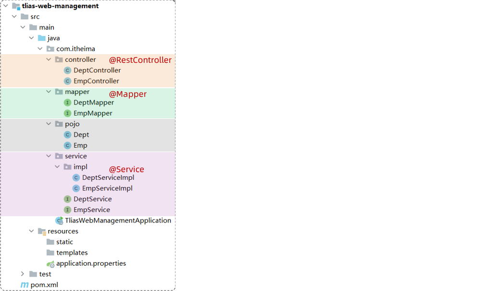
1.2 开发规范
了解完需求也完成了环境搭建了，我们下面开始学习开发的一些规范。
开发规范我们主要从以下几方面介绍：
1、开发规范-REST
我们的案例是基于当前最为主流的前后端分离模式进行开发。

在前后端分离的开发模式中，前后端开发人员都需要根据提前定义好的接口文档，来进行前后端功能的开发。
后端开发人员：必须严格遵守提供的接口文档进行后端功能开发（保障开发的功能可以和前端对接）
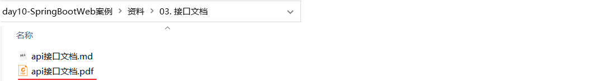
而在前后端进行交互的时候，我们需要基于当前主流的REST风格的API接口进行交互。
什么是REST风格呢?
- REST（Representational State Transfer），表述性状态转换，它是一种软件架构风格。
传统URL风格如下：
http://localhost:8080/user/getById?id=1 GET：查询id为1的用户
http://localhost:8080/user/saveUser POST：新增用户
http://localhost:8080/user/updateUser POST：修改用户
http://localhost:8080/user/deleteUser?id=1 GET：删除id为1的用户
我们看到，原始的传统URL呢，定义比较复杂，而且将资源的访问行为对外暴露出来了。
基于REST风格URL如下：
http://localhost:8080/users/1 GET：查询id为1的用户
http://localhost:8080/users POST：新增用户
http://localhost:8080/users PUT：修改用户
http://localhost:8080/users/1 DELETE：删除id为1的用户
其中总结起来，就一句话：通过URL定位要操作的资源，通过HTTP动词(请求方式)来描述具体的操作。
在REST风格的URL中，通过四种请求方式，来操作数据的增删改查。
- GET ： 查询
- POST ：新增
- PUT ：修改
- DELETE ：删除
我们看到如果是基于REST风格，定义URL，URL将会更加简洁、更加规范、更加优雅。
注意事项：
- REST是风格，是约定方式，约定不是规定，可以打破
- 描述模块的功能通常使用复数，也就是加s的格式来描述，表示此类资源，而非单个资源。如：users、emps、books…
2、开发规范-统一响应结果
前后端工程在进行交互时，使用统一响应结果 Result。
package com.itheima.pojo;
import lombok.AllArgsConstructor;
import lombok.Data;
import lombok.NoArgsConstructor;
@Data
@NoArgsConstructor
@AllArgsConstructor
public class Result {
private Integer code;//响应码，1 代表成功; 0 代表失败
private String msg; //响应信息 描述字符串
private Object data; //返回的数据
//增删改 成功响应
public static Result success(){
return new Result(1,"success",null);
}
//查询 成功响应
public static Result success(Object data){
return new Result(1,"success",data);
}
//失败响应
public static Result error(String msg){
return new Result(0,msg,null);
}
}
3、开发流程
我们在进行功能开发时，都是根据如下流程进行：

-
查看页面原型明确需求
- 根据页面原型和需求，进行表结构设计、编写接口文档(已提供)
-
阅读接口文档
-
思路分析
-
功能接口开发
- 就是开发后台的业务功能，一个业务功能，我们称为一个接口
-
功能接口测试
- 功能开发完毕后，先通过Postman进行功能接口测试，测试通过后，再和前端进行联调测试
-
前后端联调测试
- 和前端开发人员开发好的前端工程一起测试
2. 部门管理
我们按照前面学习的开发流程，开始完成功能开发。首先按照之前分析的需求，完成部门管理的功能开发。
开发的部门管理功能包含：
- 查询部门
- 删除部门
- 新增部门
- 更新部门（不讲解，自己独立完成）
2.1 查询部门
2.1.1 原型和需求

查询的部门的信息：部门ID、部门名称、修改时间
通过页面原型以及需求描述，我们可以看到，部门查询，是不需要考虑分页操作的。
2.1.2 接口文档
部门列表查询
-
基本信息
请求路径：/depts 请求方式：GET 接口描述：该接口用于部门列表数据查询 -
请求参数
无
-
响应数据
参数格式：application/json
参数说明：
参数名 类型 是否必须 备注 code number 必须 响应码，1 代表成功，0 代表失败 msg string 非必须 提示信息 data object[ ] 非必须 返回的数据 |- id number 非必须 id |- name string 非必须 部门名称 |- createTime string 非必须 创建时间 |- updateTime string 非必须 修改时间 响应数据样例：
{ "code": 1, "msg": "success", "data": [ { "id": 1, "name": "学工部", "createTime": "2022-09-01T23:06:29", "updateTime": "2022-09-01T23:06:29" }, { "id": 2, "name": "教研部", "createTime": "2022-09-01T23:06:29", "updateTime": "2022-09-01T23:06:29" } ] }
2.1.3 思路分析
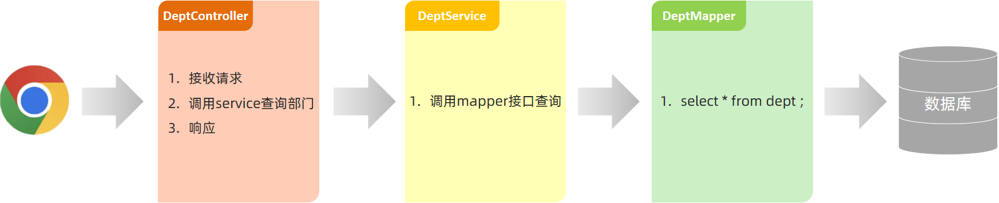
2.1.4 功能开发
通过查看接口文档：部门列表查询
请求路径：/depts
请求方式：GET
请求参数：无
响应数据：json格式
DeptController
@Slf4j
@RestController
public class DeptController {
@Autowired
private DeptService deptService;
//@RequestMapping(value = "/depts" , method = RequestMethod.GET)
@GetMapping("/depts")
public Result list(){
log.info("查询所有部门数据");
List<Dept> deptList = deptService.list();
return Result.success(deptList);
}
}
@Slf4j注解源码：
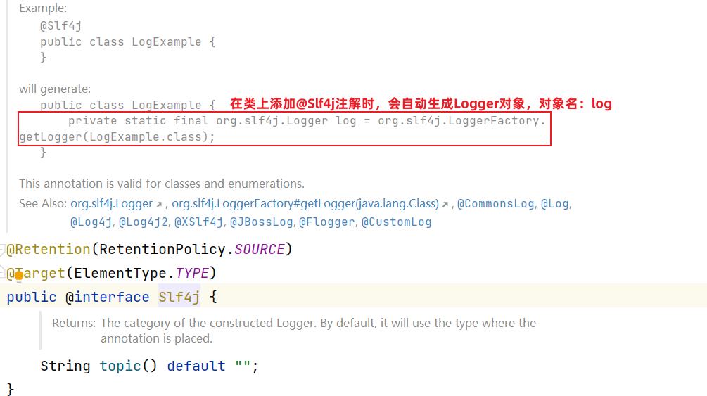
DeptService（业务接口）
public interface DeptService {
/**
* 查询所有的部门数据
* @return 存储Dept对象的集合
*/
List<Dept> list();
}
DeptServiceImpl（业务实现类）
@Slf4j
@Service
public class DeptServiceImpl implements DeptService {
@Autowired
private DeptMapper deptMapper;
@Override
public List<Dept> list() {
List<Dept> deptList = deptMapper.list();
return deptList;
}
}
DeptMapper
@Mapper
public interface DeptMapper {
//查询所有部门数据
@Select("select id, name, create_time, update_time from dept")
List<Dept> list();
}
2.1.5 功能测试
功能开发完成后，我们就可以启动项目，然后打开postman，发起GET请求，访问 ：http://localhost:8080/depts
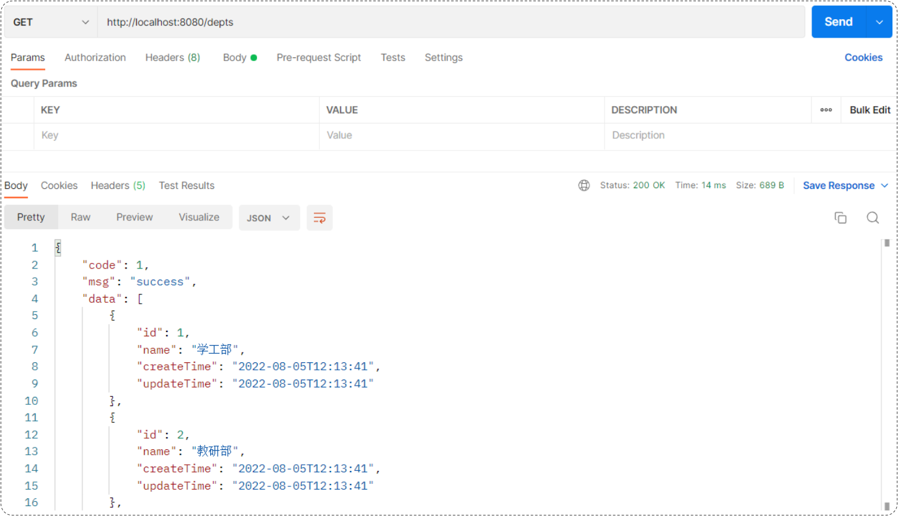
2.2 前后端联调
完成了查询部门的功能，我们也通过postman工具测试通过了，下面我们再基于前后端分离的方式进行接口联调。具体操作如下：
1、将资料中提供的"前端环境"文件夹中的压缩包，拷贝到一个没有中文不带空格的目录下
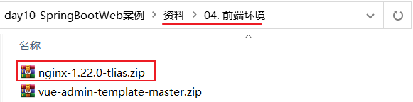
2、拷贝到一个没有中文不带空格的目录后，进行解压（解压到当前目录）

3、启动nginx


4、打开浏览器，访问：http://localhost:90
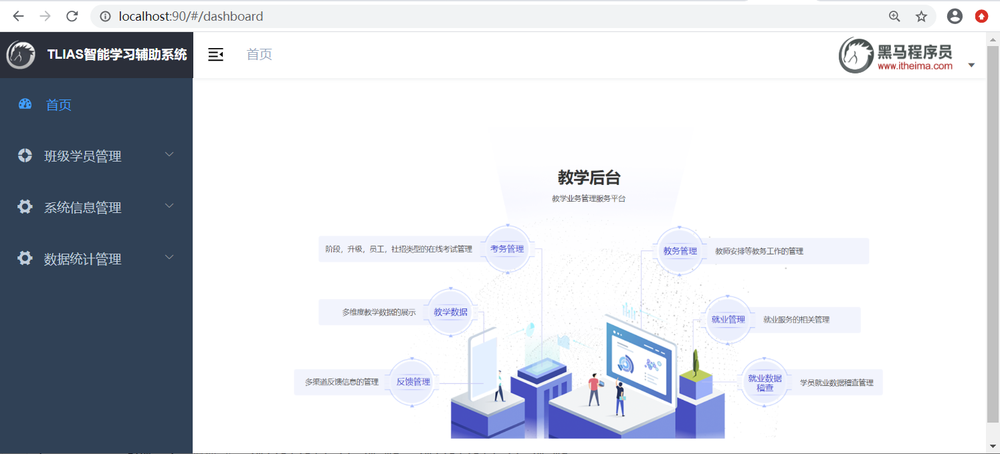
5、测试：部门管理 - 查询部门列表

说明：只要按照接口文档开发功能接口，就能保证前后端程序交互
- 后端：严格遵守接口文档进行功能接口开发
- 前端：严格遵守接口文档访问功能接口
2.3 删除部门
查询部门的功能我们搞定了，下面我们开始完成删除部门的功能开发。
2.3.1 需求

点击部门列表后面操作栏的 “删除” 按钮，就可以删除该部门信息。 此时，前端只需要给服务端传递一个ID参数就可以了。 我们从接口文档中也可以看得出来。
2.3.2 接口文档
删除部门
-
基本信息
请求路径：/depts/{id} 请求方式：DELETE 接口描述：该接口用于根据ID删除部门数据 -
请求参数 参数格式：路径参数
参数说明：
参数名 类型 是否必须 备注 id number 必须 部门ID 请求参数样例：
/depts/1 -
响应数据 参数格式：application/json
参数说明：
参数名 类型 是否必须 备注 code number 必须 响应码，1 代表成功，0 代表失败 msg string 非必须 提示信息 data object 非必须 返回的数据 响应数据样例：
{ "code":1, "msg":"success", "data":null }
2.3.3 思路分析

接口文档规定：
- 前端请求路径：/depts/{id}
- 前端请求方式：DELETE
问题1：怎么在controller中接收请求路径中的路径参数？
@PathVariable问题2：如何限定请求方式是delete？
@DeleteMapping
2.3.4 功能开发
通过查看接口文档：删除部门
请求路径：/depts/{id}
请求方式：DELETE
请求参数：路径参数 {id}
响应数据：json格式
DeptController
@Slf4j
@RestController
public class DeptController {
@Autowired
private DeptService deptService;
@DeleteMapping("/depts/{id}")
public Result delete(@PathVariable Integer id) {
//日志记录
log.info("根据id删除部门");
//调用service层功能
deptService.delete(id);
//响应
return Result.success();
}
//省略...
}
DeptService
public interface DeptService {
/**
* 根据id删除部门
* @param id 部门id
*/
void delete(Integer id);
//省略...
}
DeptServiceImpl
@Slf4j
@Service
public class DeptServiceImpl implements DeptService {
@Autowired
private DeptMapper deptMapper;
@Override
public void delete(Integer id) {
//调用持久层删除功能
deptMapper.deleteById(id);
}
//省略...
}
DeptMapper
@Mapper
public interface DeptMapper {
/**
* 根据id删除部门信息
* @param id 部门id
*/
@Delete("delete from dept where id = #{id}")
void deleteById(Integer id);
//省略...
}
2.3.5 功能测试
删除功能开发完成后，重新启动项目，使用postman，发起DELETE请求：
2.3.6 前后端联调
打开浏览器，测试后端功能接口：


2.4 新增部门
我们前面已完成了查询部门、删除部门两个功能，也熟悉了开发的流程。下面我们继续完成新增部门功能。
2.4.1 需求
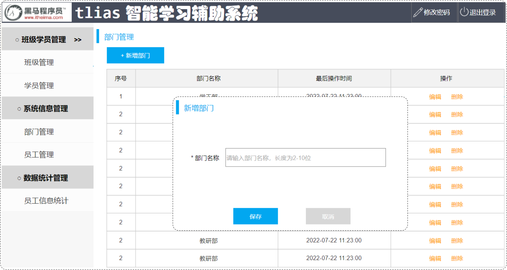
点击 “新增部门” 按钮，弹出新增部门对话框，输入部门名称，点击 “保存” ，将部门信息保存到数据库。
2.4.2 接口文档
添加部门
-
基本信息
请求路径：/depts 请求方式：POST 接口描述：该接口用于添加部门数据 -
请求参数
格式：application/json
参数说明：
参数名 类型 是否必须 备注 name string 必须 部门名称 请求参数样例：
{ "name": "教研部" } -
响应数据
参数格式：application/json
参数说明：
参数名 类型 是否必须 备注 code number 必须 响应码，1 代表成功，0 代表失败 msg string 非必须 提示信息 data object 非必须 返回的数据 响应数据样例：
{ "code":1, "msg":"success", "data":null }
2.4.3 思路分析

接口文档规定：
- 前端请求路径：/depts
- 前端请求方式：POST
- 前端请求参数 (Json格式)：{ “name”: “教研部” }
问题1：如何限定请求方式是POST？
@PostMapping问题2：怎么在controller中接收json格式的请求参数？
@RequestBody //把前端传递的json数据填充到实体类中
2.4.4 功能开发
通过查看接口文档：新增部门
请求路径：/depts
请求方式：POST
请求参数：json格式
响应数据：json格式
DeptController
@Slf4j
@RestController
public class DeptController {
@Autowired
private DeptService deptService;
@PostMapping("/depts")
public Result add(@RequestBody Dept dept){
//记录日志
log.info("新增部门：{}",dept);
//调用service层添加功能
deptService.add(dept);
//响应
return Result.success();
}
//省略...
}
DeptService
public interface DeptService {
/**
* 新增部门
* @param dept 部门对象
*/
void add(Dept dept);
//省略...
}
DeptServiceImpl
@Slf4j
@Service
public class DeptServiceImpl implements DeptService {
@Autowired
private DeptMapper deptMapper;
@Override
public void add(Dept dept) {
//补全部门数据
dept.setCreateTime(LocalDateTime.now());
dept.setUpdateTime(LocalDateTime.now());
//调用持久层增加功能
deptMapper.inser(dept);
}
//省略...
}
DeptMapper
@Mapper
public interface DeptMapper {
@Insert("insert into dept (name, create_time, update_time) values (#{name},#{createTime},#{updateTime})")
void inser(Dept dept);
//省略...
}
2.4.5 功能测试
新增功能开发完成后，重新启动项目，使用postman，发起POST请求：

2.4.6 前后端联调
打开浏览器，测试后端功能接口：
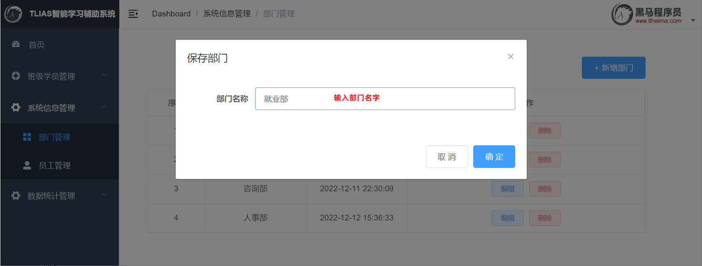
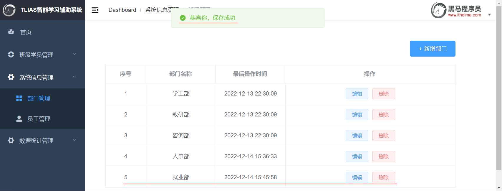
2.4.7 请求路径
我们部门管理的查询、删除、新增功能全部完成了，接下来我们要对controller层的代码进行优化。
首先我们先来看下目前controller层代码：

以上三个方法上的请求路径，存在一个共同点：都是以
/depts作为开头。（重复了）
在Spring当中为了简化请求路径的定义，可以把公共的请求路径，直接抽取到类上，在类上加一个注解@RequestMapping，并指定请求路径"/depts"。代码参照如下：
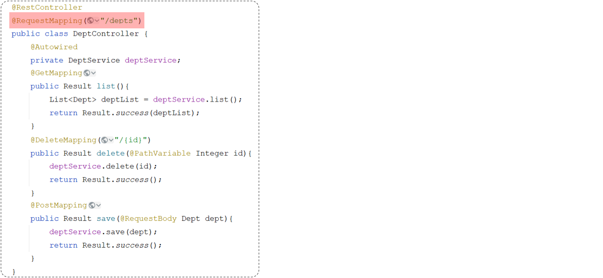
优化前后的对比：
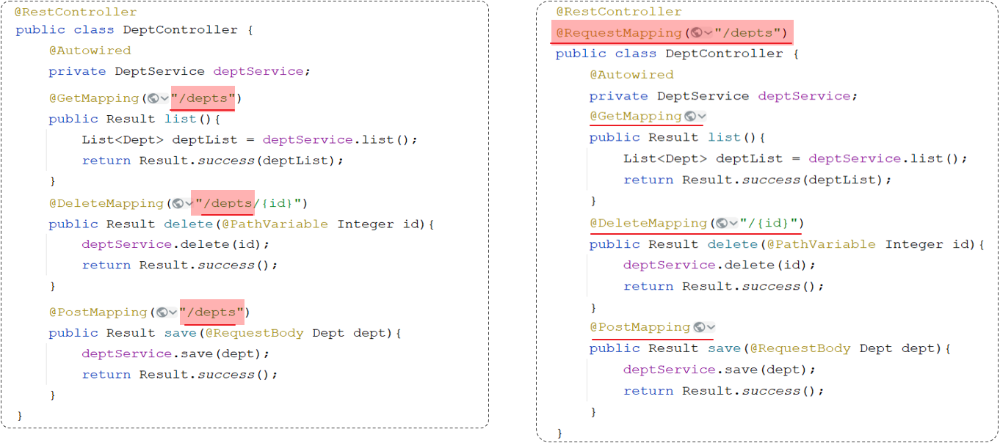
注意事项：一个完整的请求路径，应该是类上@RequestMapping的value属性 + 方法上的 @RequestMapping的value属性
3. 员工管理
完成了部门管理的功能开发之后，我们进入到下一环节员工管理功能的开发。

基于以上原型，我们可以把员工管理功能分为：
- 分页查询（今天完成）
- 带条件的分页查询（今天完成）
- 删除员工（今天完成）
- 新增员工（后续完成）
- 修改员工（后续完成）
那下面我们就先从分页查询功能开始学习。
3.1 分页查询
3.1.1 基础分页
3.1.1.1 需求分析
我们之前做的查询功能，是将数据库中所有的数据查询出来并展示到页面上，试想如果数据库中的数据有很多(假设有十几万条)的时候，将数据全部展示出来肯定不现实，那如何解决这个问题呢？
使用分页解决这个问题。每次只展示一页的数据，比如：一页展示10条数据，如果还想看其他的数据，可以通过点击页码进行查询。
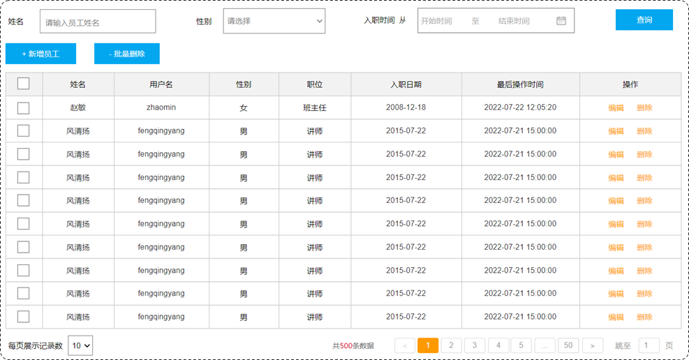
要想从数据库中进行分页查询，我们要使用LIMIT关键字，格式为：limit 开始索引 每页显示的条数
查询第1页数据的SQL语句是：
select * from emp limit 0,10;查询第2页数据的SQL语句是：
select * from emp limit 10,10;查询第3页的数据的SQL语句是：
select * from emp limit 20,10;观察以上SQL语句，发现： 开始索引一直在改变 ， 每页显示条数是固定的
开始索引的计算公式： 开始索引 = (当前页码 - 1) * 每页显示条数
我们继续基于页面原型，继续分析，得出以下结论：
- 前端在请求服务端时，传递的参数
- 当前页码 page
- 每页显示条数 pageSize
- 后端需要响应什么数据给前端
- 所查询到的数据列表（存储到List 集合中）
- 总记录数

后台给前端返回的数据包含：List集合(数据列表)、total(总记录数)
而这两部分我们通常封装到PageBean对象中，并将该对象转换为json格式的数据响应回给浏览器。
@Data @NoArgsConstructor @AllArgsConstructor public class PageBean { private Long total; //总记录数 private List rows; //当前页数据列表 }
3.1.1.2 接口文档
员工列表查询
-
基本信息
请求路径：/emps 请求方式：GET 接口描述：该接口用于员工列表数据的条件分页查询 -
请求参数
参数格式：queryString
参数说明：
参数名称 是否必须 示例 备注 name 否 张 姓名 gender 否 1 性别 , 1 男 , 2 女 begin 否 2010-01-01 范围匹配的开始时间(入职日期) end 否 2020-01-01 范围匹配的结束时间(入职日期) page 是 1 分页查询的页码，如果未指定，默认为1 pageSize 是 10 分页查询的每页记录数，如果未指定，默认为10 请求数据样例：
/emps?name=张&gender=1&begin=2007-09-01&end=2022-09-01&page=1&pageSize=10 -
响应数据
参数格式：application/json
参数说明：
名称 类型 是否必须 默认值 备注 其他信息 code number 必须 响应码, 1 成功 , 0 失败 msg string 非必须 提示信息 data object 必须 返回的数据 |- total number 必须 总记录数 |- rows object [] 必须 数据列表 item 类型: object |- id number 非必须 id |- username string 非必须 用户名 |- name string 非必须 姓名 |- password string 非必须 密码 |- entrydate string 非必须 入职日期 |- gender number 非必须 性别 , 1 男 ; 2 女 |- image string 非必须 图像 |- job number 非必须 职位, 说明: 1 班主任,2 讲师, 3 学工主管, 4 教研主管, 5 咨询师 |- deptId number 非必须 部门id |- createTime string 非必须 创建时间 |- updateTime string 非必须 更新时间 响应数据样例：
{ "code": 1, "msg": "success", "data": { "total": 2, "rows": [ { "id": 1, "username": "jinyong", "password": "123456", "name": "金庸", "gender": 1, "image": "https://web-framework.oss-cn-hangzhou.aliyuncs.com/2022-09-02-00-27-53B.jpg", "job": 2, "entrydate": "2015-01-01", "deptId": 2, "createTime": "2022-09-01T23:06:30", "updateTime": "2022-09-02T00:29:04" }, { "id": 2, "username": "zhangwuji", "password": "123456", "name": "张无忌", "gender": 1, "image": "https://web-framework.oss-cn-hangzhou.aliyuncs.com/2022-09-02-00-27-53B.jpg", "job": 2, "entrydate": "2015-01-01", "deptId": 2, "createTime": "2022-09-01T23:06:30", "updateTime": "2022-09-02T00:29:04" } ] } }
3.1.1.3 思路分析

分页查询需要的数据，封装在PageBean对象中：
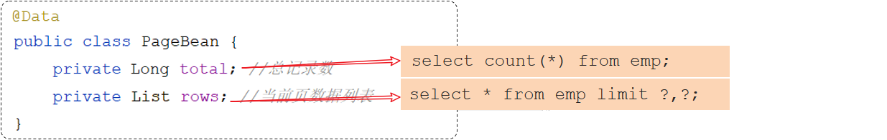
3.1.1.4 功能开发
通过查看接口文档：员工列表查询
请求路径：/emps
请求方式：GET
请求参数：跟随在请求路径后的参数字符串。 例：/emps?page=1&pageSize=10
响应数据：json格式
EmpController
import com.itheima.pojo.PageBean;
import com.itheima.pojo.Result;
import com.itheima.service.EmpService;
import lombok.extern.slf4j.Slf4j;
import org.springframework.beans.factory.annotation.Autowired;
import org.springframework.web.bind.annotation.GetMapping;
import org.springframework.web.bind.annotation.RequestMapping;
import org.springframework.web.bind.annotation.RequestParam;
import org.springframework.web.bind.annotation.RestController;
@Slf4j
@RestController
@RequestMapping("/emps")
public class EmpController {
@Autowired
private EmpService empService;
//条件分页查询
@GetMapping
public Result page(@RequestParam(defaultValue = "1") Integer page,
@RequestParam(defaultValue = "10") Integer pageSize) {
//记录日志
log.info("分页查询，参数：{},{}", page, pageSize);
//调用业务层分页查询功能
PageBean pageBean = empService.page(page, pageSize);
//响应
return Result.success(pageBean);
}
}
@RequestParam(defaultValue=“默认值”) //设置请求参数默认值
EmpService
public interface EmpService {
/**
* 条件分页查询
* @param page 页码
* @param pageSize 每页展示记录数
* @return
*/
PageBean page(Integer page, Integer pageSize);
}
EmpServiceImpl
import com.itheima.mapper.EmpMapper;
import com.itheima.pojo.Emp;
import com.itheima.pojo.PageBean;
import com.itheima.service.EmpService;
import lombok.extern.slf4j.Slf4j;
import org.springframework.beans.factory.annotation.Autowired;
import org.springframework.stereotype.Service;
import java.time.LocalDate;
import java.util.List;
@Slf4j
@Service
public class EmpServiceImpl implements EmpService {
@Autowired
private EmpMapper empMapper;
@Override
public PageBean page(Integer page, Integer pageSize) {
//1、获取总记录数
Long count = empMapper.count();
//2、获取分页查询结果列表
Integer start = (page - 1) * pageSize; //计算起始索引 , 公式: (页码-1)*页大小
List<Emp> empList = empMapper.list(start, pageSize);
//3、封装PageBean对象
PageBean pageBean = new PageBean(count , empList);
return pageBean;
}
}
EmpMapper
@Mapper
public interface EmpMapper {
//获取总记录数
@Select("select count(*) from emp")
public Long count();
//获取当前页的结果列表
@Select("select * from emp limit #{start}, #{pageSize}")
public List<Emp> list(Integer start, Integer pageSize);
}
3.1.1.5 功能测试
功能开发完成后，重新启动项目，使用postman，发起POST请求：

3.1.1.6 前后端联调
打开浏览器，测试后端功能接口：
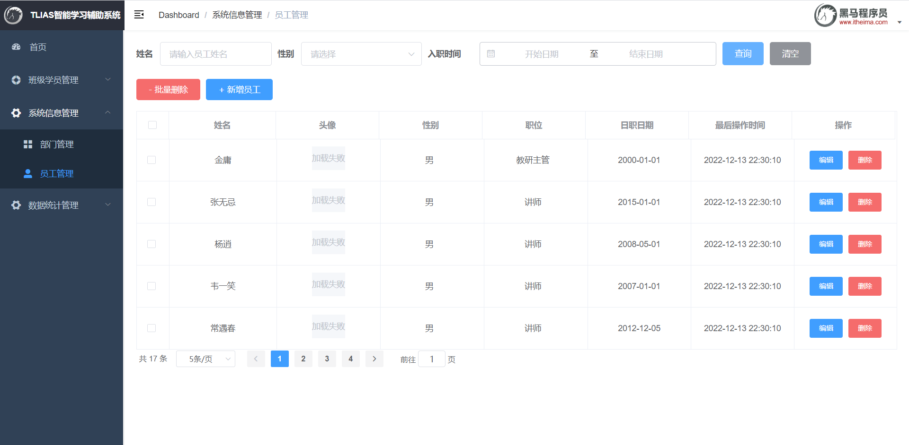
3.1.2 分页插件
3.1.2.1 介绍
前面我们已经完了基础的分页查询，大家会发现：分页查询功能编写起来比较繁琐。

在Mapper接口中定义两个方法执行两条不同的SQL语句：
- 查询总记录数
- 指定页码的数据列表
在Service当中，调用Mapper接口的两个方法，分别获取：总记录数、查询结果列表，然后在将获取的数据结果封装到PageBean对象中。
大家思考下：在未来开发其他项目，只要涉及到分页查询功能(例：订单、用户、支付、商品)，都必须按照以上操作完成功能开发
结论：原始方式的分页查询，存在着"步骤固定"、“代码频繁"的问题
==解决方案：可以使用一些现成的分页插件完成。对于Mybatis来讲现在最主流的就是PageHelper。==
PageHelper是Mybatis的一款功能强大、方便易用的分页插件，支持任何形式的单标、多表的分页查询。
官网：https://pagehelper.github.io/
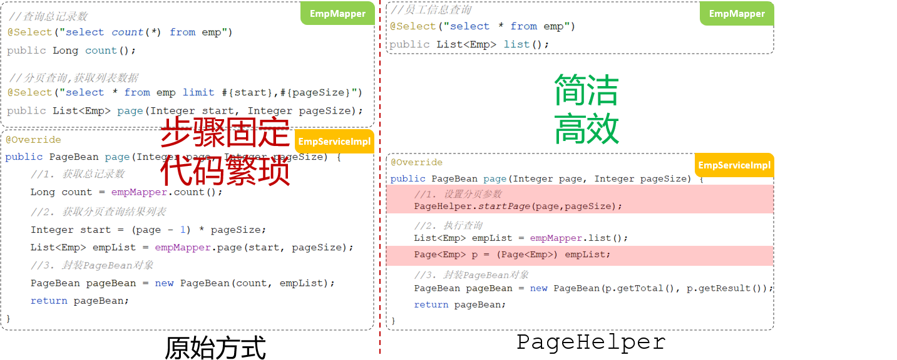
在执行empMapper.list()方法时，就是执行：select * from emp 语句，怎么能够实现分页操作呢？
分页插件帮我们完成了以下操作：
- 先获取到要执行的SQL语句：select * from emp
- 把SQL语句中的字段列表，变为：count(*)
- 执行SQL语句：select count(*) from emp //获取到总记录数
- 再对要执行的SQL语句：select * from emp 进行改造，在末尾添加 limit ? , ?
- 执行改造后的SQL语句：select * from emp limit ? , ?
3.1.2.2 代码实现
当使用了PageHelper分页插件进行分页，就无需再Mapper中进行手动分页了。 在Mapper中我们只需要进行正常的列表查询即可。在Service层中，调用Mapper的方法之前设置分页参数，在调用Mapper方法执行查询之后，解析分页结果，并将结果封装到PageBean对象中返回。
1、在pom.xml引入依赖
<dependency>
<groupId>com.github.pagehelper</groupId>
<artifactId>pagehelper-spring-boot-starter</artifactId>
<version>1.4.2</version>
</dependency>
2、EmpMapper
@Mapper
public interface EmpMapper {
//获取当前页的结果列表
@Select("select * from emp")
public List<Emp> page(Integer start, Integer pageSize);
}
3、EmpServiceImpl
@Override
public PageBean page(Integer page, Integer pageSize) {
// 设置分页参数
PageHelper.startPage(page, pageSize);
// 执行分页查询
List<Emp> empList = empMapper.list(name,gender,begin,end);
// 获取分页结果
Page<Emp> p = (Page<Emp>) empList;
//封装PageBean
PageBean pageBean = new PageBean(p.getTotal(), p.getResult());
return pageBean;
}
3.1.2.3 测试
功能开发完成后，我们重启项目工程，打开postman，发起GET请求，访问 ：http://localhost:8080/emps?page=1&pageSize=5
后端程序SQL输出：
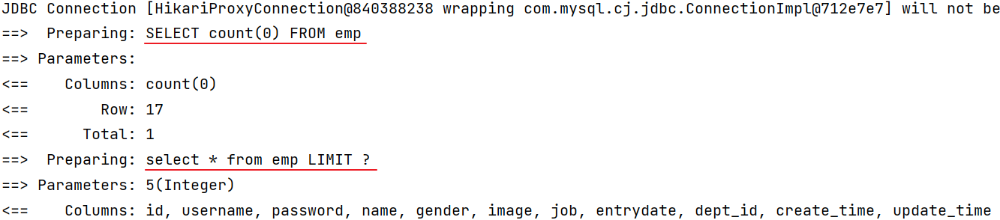
3.2 分页查询(带条件)
完了分页查询后，下面我们需要在分页查询的基础上，添加条件。
3.2.1 需求
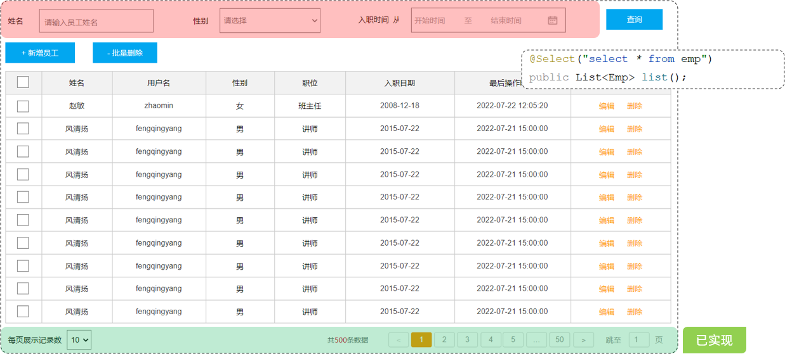
通过员工管理的页面原型我们可以看到，员工列表页面的查询，不仅仅需要考虑分页，还需要考虑查询条件。 分页查询我们已经实现了，接下来，我们需要考虑在分页查询的基础上，再加上查询条件。
我们看到页面原型及需求中描述，搜索栏的搜索条件有三个，分别是：
- 姓名：模糊匹配
- 性别：精确匹配
- 入职日期：范围匹配
select *
from emp
where
name like concat('%','张','%') -- 条件1：根据姓名模糊匹配
and gender = 1 -- 条件2：根据性别精确匹配
and entrydate = between '2000-01-01' and '2010-01-01' -- 条件3：根据入职日期范围匹配
order by update_time desc;
而且上述的三个条件，都是可以传递，也可以不传递的，也就是动态的。 我们需要使用前面学习的Mybatis中的动态SQL 。
3.2.2 思路分析

3.2.3 功能开发
通过查看接口文档：员工列表查询
请求路径：/emps
请求方式：GET
请求参数：
参数名称 是否必须 示例 备注 name 否 张 姓名 gender 否 1 性别 , 1 男 , 2 女 begin 否 2010-01-01 范围匹配的开始时间(入职日期) end 否 2020-01-01 范围匹配的结束时间(入职日期) page 是 1 分页查询的页码，如果未指定，默认为1 pageSize 是 10 分页查询的每页记录数，如果未指定，默认为10
在原有分页查询的代码基础上进行改造：
EmpController
@Slf4j
@RestController
@RequestMapping("/emps")
public class EmpController {
@Autowired
private EmpService empService;
//条件分页查询
@GetMapping
public Result page(@RequestParam(defaultValue = "1") Integer page,
@RequestParam(defaultValue = "10") Integer pageSize,
String name, Short gender,
@DateTimeFormat(pattern = "yyyy-MM-dd") LocalDate begin,
@DateTimeFormat(pattern = "yyyy-MM-dd") LocalDate end) {
//记录日志
log.info("分页查询，参数：{},{},{},{},{},{}", page, pageSize,name, gender, begin, end);
//调用业务层分页查询功能
PageBean pageBean = empService.page(page, pageSize, name, gender, begin, end);
//响应
return Result.success(pageBean);
}
}
EmpService
public interface EmpService {
/**
* 条件分页查询
* @param page 页码
* @param pageSize 每页展示记录数
* @param name 姓名
* @param gender 性别
* @param begin 开始时间
* @param end 结束时间
* @return
*/
PageBean page(Integer page, Integer pageSize, String name, Short gender, LocalDate begin, LocalDate end);
}
EmpServiceImpl
@Slf4j
@Service
public class EmpServiceImpl implements EmpService {
@Autowired
private EmpMapper empMapper;
@Override
public PageBean page(Integer page, Integer pageSize, String name, Short gender, LocalDate begin, LocalDate end) {
//设置分页参数
PageHelper.startPage(page, pageSize);
//执行条件分页查询
List<Emp> empList = empMapper.list(name, gender, begin, end);
//获取查询结果
Page<Emp> p = (Page<Emp>) empList;
//封装PageBean
PageBean pageBean = new PageBean(p.getTotal(), p.getResult());
return pageBean;
}
}
EmpMapper
@Mapper
public interface EmpMapper {
//获取当前页的结果列表
public List<Emp> list(String name, Short gender, LocalDate begin, LocalDate end);
}
EmpMapper.xml
<?xml version="1.0" encoding="UTF-8" ?>
<!DOCTYPE mapper
PUBLIC "-//mybatis.org//DTD Mapper 3.0//EN"
"http://mybatis.org/dtd/mybatis-3-mapper.dtd">
<mapper namespace="com.itheima.mapper.EmpMapper">
<!-- 条件分页查询 -->
<select id="list" resultType="com.itheima.pojo.Emp">
select * from emp
<where>
<if test="name != null and name != ''">
name like concat('%',#{name},'%')
</if>
<if test="gender != null">
and gender = #{gender}
</if>
<if test="begin != null and end != null">
and entrydate between #{begin} and #{end}
</if>
</where>
order by update_time desc
</select>
</mapper>
3.2.4 功能测试
功能开发完成后，重启项目工程，打开postman，发起GET请求：
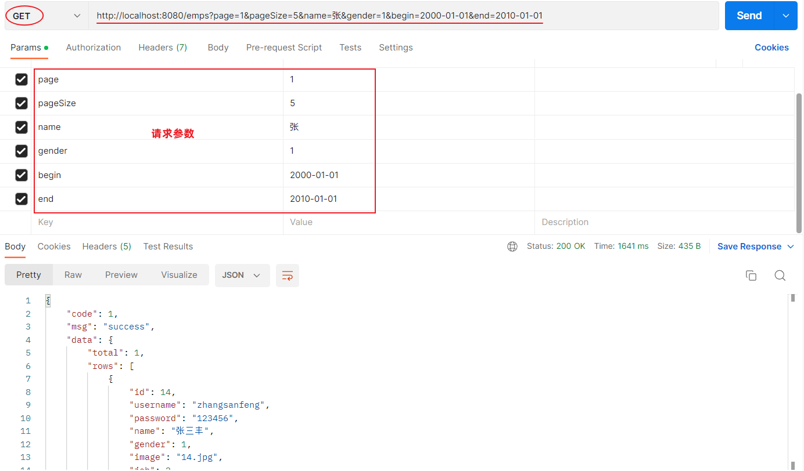
控制台SQL语句：
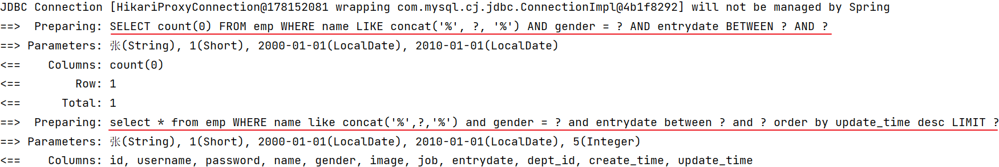
3.2.5 前后端联调
打开浏览器，测试后端功能接口：
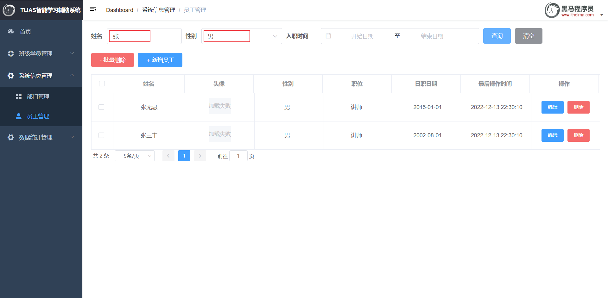
3.3 删除员工
查询员完成之后，我们继续开发新的功能：删除员工。
3.3.1 需求
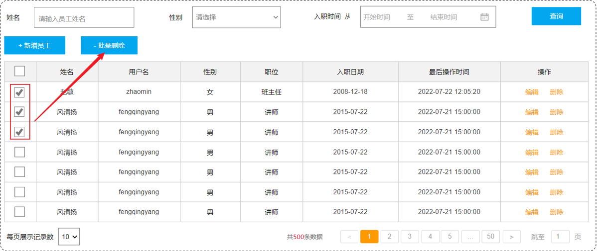
当我们勾选列表前面的复选框，然后点击 “批量删除” 按钮，就可以将这一批次的员工信息删除掉了。也可以只勾选一个复选框，仅删除一个员工信息。
问题：我们需要开发两个功能接口吗？一个删除单个员工，一个删除多个员工
答案：不需要。 只需要开发一个功能接口即可（删除多个员工包含只删除一个员工）
3.3.2 接口文档
删除员工
-
基本信息
请求路径：/emps/{ids} 请求方式：DELETE 接口描述：该接口用于批量删除员工的数据信息 -
请求参数
参数格式：路径参数
参数说明：
参数名 类型 示例 是否必须 备注 ids 数组 array 1,2,3 必须 员工的id数组 请求参数样例：
/emps/1,2,3 -
响应数据
参数格式：application/json
参数说明：
参数名 类型 是否必须 备注 code number 必须 响应码，1 代表成功，0 代表失败 msg string 非必须 提示信息 data object 非必须 返回的数据 响应数据样例：
{ "code":1, "msg":"success", "data":null }
3.3.3 思路分析

接口文档规定：
- 前端请求路径：/emps/{ids}
- 前端请求方式：DELETE
问题1：怎么在controller中接收请求路径中的路径参数？
@PathVariable问题2：如何限定请求方式是delete？
@DeleteMapping问题3：在Mapper接口中，执行delete操作的SQL语句时，条件中的id值是不确定的是动态的，怎么实现呢？
Mybatis中的动态SQL：foreach
3.3.4 功能开发
通过查看接口文档：删除员工
请求路径：/emps/{ids}
请求方式：DELETE
请求参数：路径参数 {ids}
响应数据：json格式
EmpController
@Slf4j
@RestController
@RequestMapping("/emps")
public class EmpController {
@Autowired
private EmpService empService;
//批量删除
@DeleteMapping("/{ids}")
public Result delete(@PathVariable List<Integer> ids){
empService.delete(ids);
return Result.success();
}
//条件分页查询
@GetMapping
public Result page(@RequestParam(defaultValue = "1") Integer page,
@RequestParam(defaultValue = "10") Integer pageSize,
String name, Short gender,
@DateTimeFormat(pattern = "yyyy-MM-dd") LocalDate begin,
@DateTimeFormat(pattern = "yyyy-MM-dd") LocalDate end) {
//记录日志
log.info("分页查询，参数：{},{},{},{},{},{}", page, pageSize,name, gender, begin, end);
//调用业务层分页查询功能
PageBean pageBean = empService.page(page, pageSize, name, gender, begin, end);
//响应
return Result.success(pageBean);
}
}
EmpService
public interface EmpService {
/**
* 批量删除操作
* @param ids id集合
*/
void delete(List<Integer> ids);
//省略...
}
EmpServiceImpl
@Slf4j
@Service
public class EmpServiceImpl implements EmpService {
@Autowired
private EmpMapper empMapper;
@Override
public void delete(List<Integer> ids) {
empMapper.delete(ids);
}
//省略...
}
EmpMapper
@Mapper
public interface EmpMapper {
//批量删除
void delete(List<Integer> ids);
//省略...
}
EmpMapper.xml
<?xml version="1.0" encoding="UTF-8" ?>
<!DOCTYPE mapper
PUBLIC "-//mybatis.org//DTD Mapper 3.0//EN"
"http://mybatis.org/dtd/mybatis-3-mapper.dtd">
<mapper namespace="com.itheima.mapper.EmpMapper">
<!--批量删除员工-->
<select id="delete">
delete from emp where id in
<foreach collection="ids" item="id" open="(" close=")" separator=",">
#{id}
</foreach>
</select>
<!-- 省略... -->
</mapper>
3.3.5 功能测试
功能开发完成后，重启项目工程，打开postman，发起DELETE请求：

控制台SQL语句：

3.3.6 前后端联调
打开浏览器，测试后端功能接口：
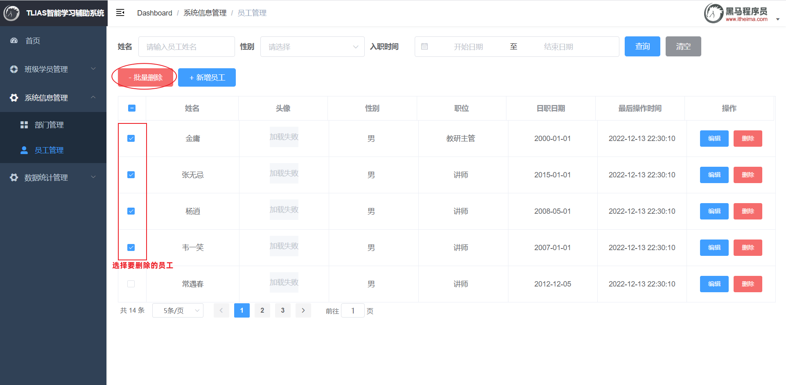


SpringBootWeb案例2
前面我们已经实现了员工信息的条件分页查询以及删除操作。 关于员工管理的功能，还有两个需要实现：
- 新增员工
- 修改员工
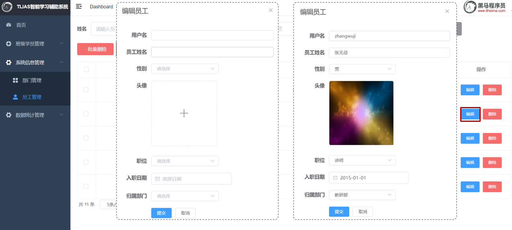
首先我们先完成"新增员工"的功能开发，再完成"修改员工"的功能开发。而在"新增员工"中，需要添加头像，而头像需要用到"文件上传"技术。 当整个员工管理功能全部开发完成之后，我们再通过配置文件来优化一些内容。
综上所述，我们今天的课程内容包含以下四个部分：
- 新增员工
- 文件上传
- 修改员工
- 配置文件
1. 新增员工
1.1 需求
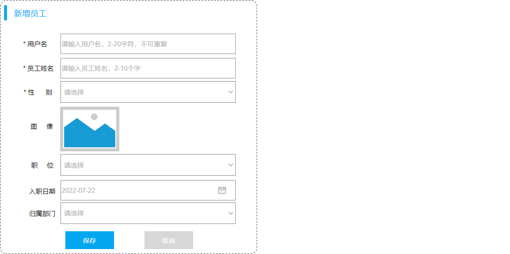
在新增用户时，我们需要保存用户的基本信息，并且还需要上传的员工的图片，目前我们先完成第一步操作，保存用户的基本信息。
1.2 接口文档
我们参照接口文档来开发新增员工功能
-
基本信息
请求路径：/emps 请求方式：POST 接口描述：该接口用于添加员工的信息 -
请求参数
参数格式：application/json
参数说明：
名称 类型 是否必须 备注 username string 必须 用户名 name string 必须 姓名 gender number 必须 性别, 说明: 1 男, 2 女 image string 非必须 图像 deptId number 非必须 部门id entrydate string 非必须 入职日期 job number 非必须 职位, 说明: 1 班主任,2 讲师, 3 学工主管, 4 教研主管, 5 咨询师 请求数据样例：
{ "image": "https://web-framework.oss-cn-hangzhou.aliyuncs.com/2022-09-03-07-37-38222.jpg", "username": "linpingzhi", "name": "林平之", "gender": 1, "job": 1, "entrydate": "2022-09-18", "deptId": 1 } -
响应数据
参数格式：application/json
参数说明：
参数名 类型 是否必须 备注 code number 必须 响应码，1 代表成功，0 代表失败 msg string 非必须 提示信息 data object 非必须 返回的数据 响应数据样例：
{ "code":1, "msg":"success", "data":null }
1.3 思路分析
新增员工的具体的流程：
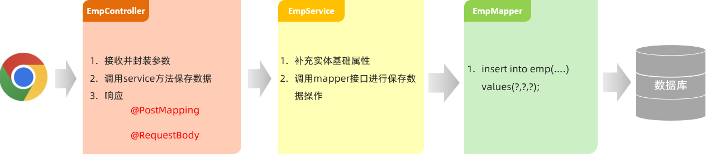
接口文档规定：
- 请求路径：/emps
- 请求方式：POST
- 请求参数：Json格式数据
- 响应数据：Json格式数据
问题1：如何限定请求方式是POST？
@PostMapping问题2：怎么在controller中接收json格式的请求参数？
@RequestBody //把前端传递的json数据填充到实体类中
1.4 功能开发
EmpController
@Slf4j
@RestController
@RequestMapping("/emps")
public class EmpController {
@Autowired
private EmpService empService;
//新增
@PostMapping
public Result save(@RequestBody Emp emp){
//记录日志
log.info("新增员工, emp:{}",emp);
//调用业务层新增功能
empService.save(emp);
//响应
return Result.success();
}
//省略...
}
EmpService
public interface EmpService {
/**
* 保存员工信息
* @param emp
*/
void save(Emp emp);
//省略...
}
EmpServiceImpl
@Slf4j
@Service
public class EmpServiceImpl implements EmpService {
@Autowired
private EmpMapper empMapper;
@Override
public void save(Emp emp) {
//补全数据
emp.setCreateTime(LocalDateTime.now());
emp.setUpdateTime(LocalDateTime.now());
//调用添加方法
empMapper.insert(emp);
}
//省略...
}
EmpMapper
@Mapper
public interface EmpMapper {
//新增员工
@Insert("insert into emp (username, name, gender, image, job, entrydate, dept_id, create_time, update_time) " +
"values (#{username}, #{name}, #{gender}, #{image}, #{job}, #{entrydate}, #{deptId}, #{createTime}, #{updateTime});")
void insert(Emp emp);
//省略...
}
1.5 功能测试
代码开发完成后，重启服务器，打开Postman发送 POST 请求，请求路径：http://localhost:8080/emps
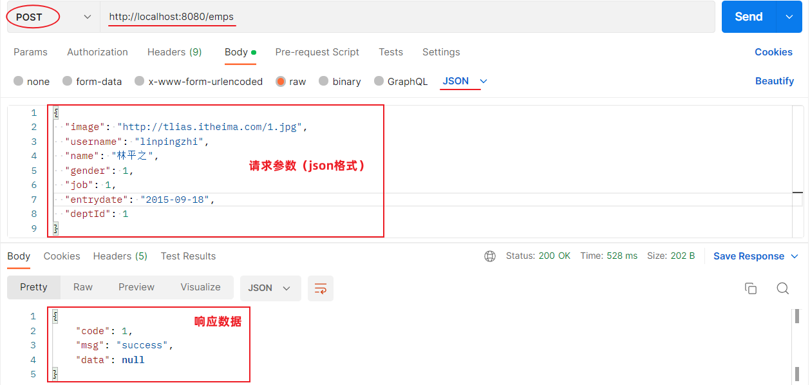
1.6 前后端联调
功能测试通过后，我们再进行通过打开浏览器，测试后端功能接口：
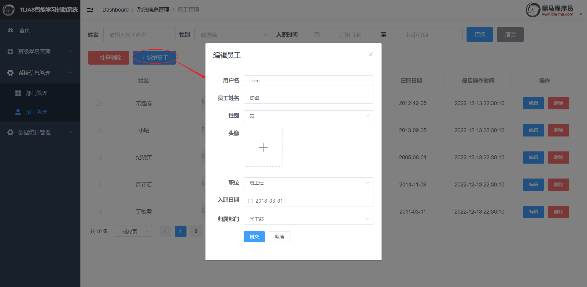
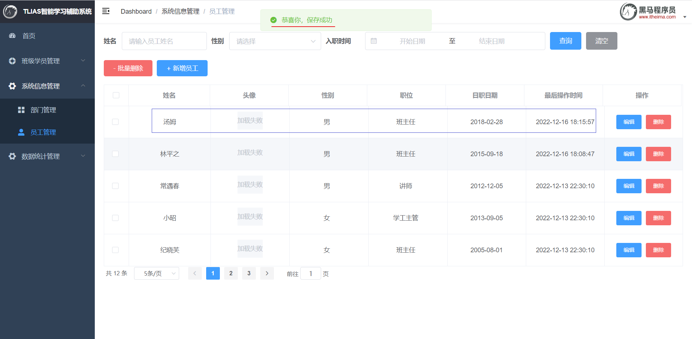
2. 文件上传
在我们完成的新增员工功能中，还存在一个问题：没有头像(图片缺失)
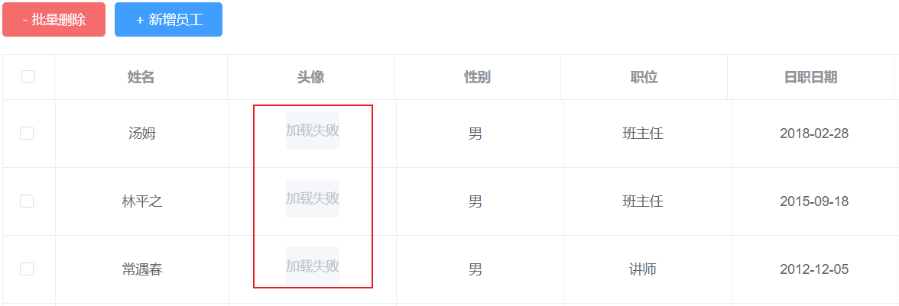
上述问题，需要我们通过文件上传技术来解决。下面我们就进入到文件上传技术的学习。
文件上传技术这块我们主要讲解三个方面：首先我们先对文件上传做一个整体的介绍，接着再学习文件上传的本地存储方式，最后学习云存储方式。
接下来我们就先来学习下什么是文件上传。
2.1 简介
文件上传，是指将本地图片、视频、音频等文件上传到服务器，供其他用户浏览或下载的过程。
文件上传在项目中应用非常广泛，我们经常发微博、发微信朋友圈都用到了文件上传功能。
在我们的案例中，在新增员工的时候，要上传员工的头像，此时就会涉及到文件上传的功能。在进行文件上传时，我们点击加号或者是点击图片，就可以选择手机或者是电脑本地的图片文件了。当我们选择了某一个图片文件之后，这个文件就会上传到服务器，从而完成文件上传的操作。
想要完成文件上传这个功能需要涉及到两个部分：
- 前端程序
- 服务端程序
我们先来看看在前端程序中要完成哪些代码：
<form action="/upload" method="post" enctype="multipart/form-data">
姓名: <input type="text" name="username"><br>
年龄: <input type="text" name="age"><br>
头像: <input type="file" name="image"><br>
<input type="submit" value="提交">
</form>
上传文件的原始form表单，要求表单必须具备以下三点（上传文件页面三要素）：
-
表单必须有file域，用于选择要上传的文件
<input type="file" name="image"/> -
表单提交方式必须为POST
通常上传的文件会比较大，所以需要使用 POST 提交方式
-
表单的编码类型enctype必须要设置为：multipart/form-data
普通默认的编码格式是不适合传输大型的二进制数据的，所以在文件上传时，表单的编码格式必须设置为multipart/form-data
前端页面的3要素我们了解后，接下来我们就来验证下所讲解的文件上传3要素。
在提供的"课程资料"中有一个名叫"文件上传"的文件夹，直接将里的"upload.html"文件，复制到springboot项目工程下的static目录里面。
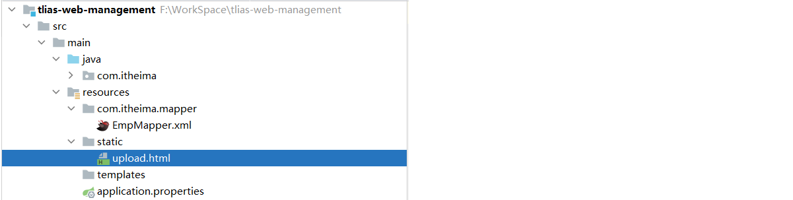
下面我们来验证：删除form表单中enctype属性值，会是什么情况？
- 在IDEA中直接使用浏览器打开upload.html页面
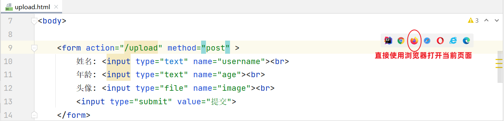
- 选择要上传的本地文件
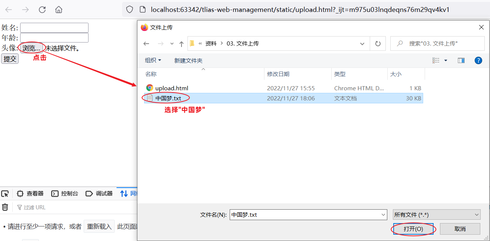
- 点击"提交"按钮，进入到开发者模式观察
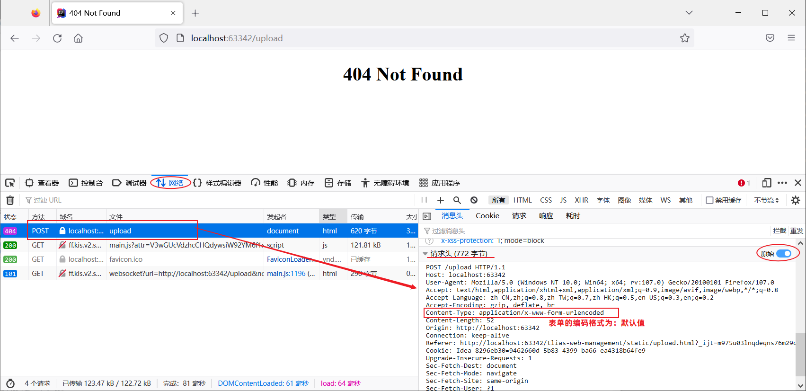
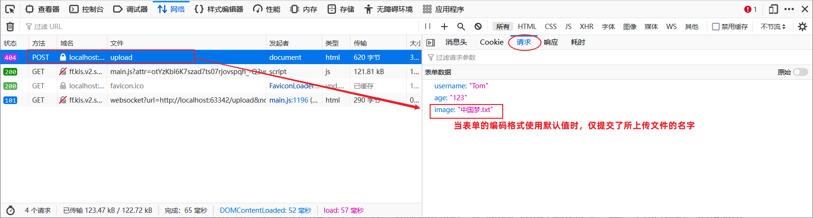
我们再来验证：设置form表单中enctype属性值为multipart/form-data，会是什么情况？
<form action="/upload" method="post" enctype="multipart/form-data">
姓名: <input type="text" name="username"><br>
年龄: <input type="text" name="age"><br>
头像: <input type="file" name="image"><br>
<input type="submit" value="提交">
</form>
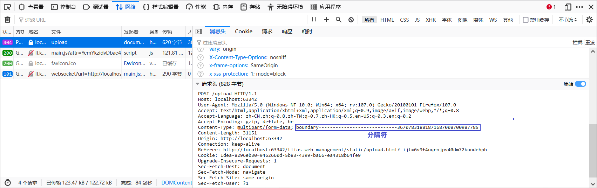
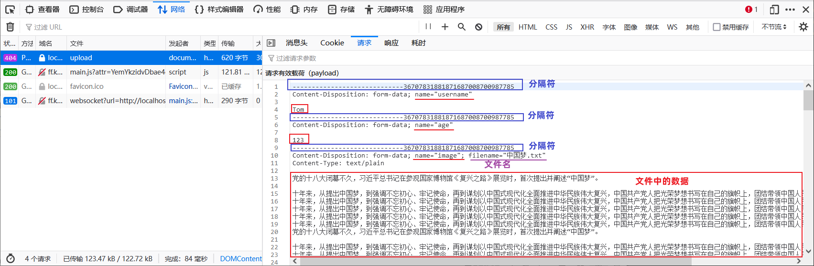
知道了前端程序中需要设置上传文件页面三要素，那我们的后端程序又是如何实现的呢？
-
首先在服务端定义这么一个controller，用来进行文件上传，然后在controller当中定义一个方法来处理
/upload请求 -
在定义的方法中接收提交过来的数据 （方法中的形参名和请求参数的名字保持一致）
- 用户名：String name
- 年龄： Integer age
- 文件： MultipartFile image
Spring中提供了一个API：MultipartFile，使用这个API就可以来接收到上传的文件
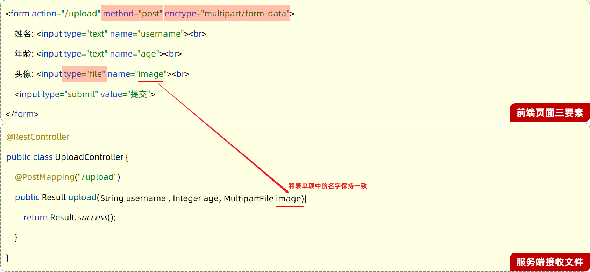
问题：如果表单项的名字和方法中形参名不一致，该怎么办？
public Result upload(String username, Integer age, MultipartFile file) //file形参名和请求参数名image不一致解决：使用@RequestParam注解进行参数绑定
public Result upload(String username, Integer age, @RequestParam("image") MultipartFile file)
UploadController代码：
@Slf4j
@RestController
public class UploadController {
@PostMapping("/upload")
public Result upload(String username, Integer age, MultipartFile image) {
log.info("文件上传：{},{},{}",username,age,image);
return Result.success();
}
}
后端程序编写完成之后，打个断点，以debug方式启动SpringBoot项目
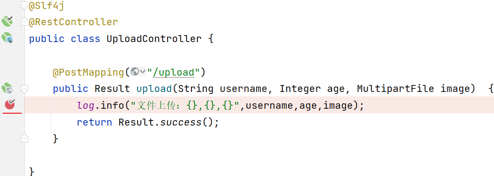
打开浏览器输入：http://localhost:8080/upload.html ， 录入数据并提交
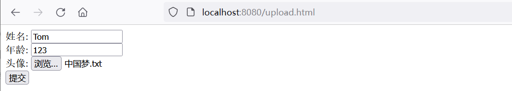
通过后端程序控制台可以看到，上传的文件是存放在一个临时目录
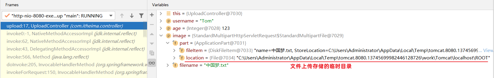
打开临时目录可以看到以下内容：
表单提交的三项数据(姓名、年龄、文件)，分别存储在不同的临时文件中：
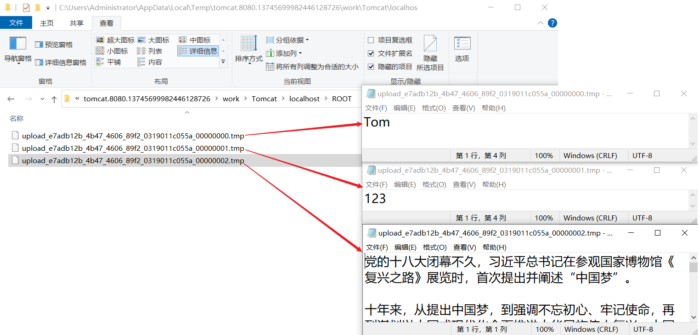
当我们程序运行完毕之后，这个临时文件会自动删除。
所以，我们如果想要实现文件上传，需要将这个临时文件，要转存到我们的磁盘目录中。
2.2 本地存储
前面我们已分析了文件上传功能前端和后端的基础代码实现，文件上传时在服务端会产生一个临时文件，请求响应完成之后，这个临时文件被自动删除，并没有进行保存。下面呢，我们就需要完成将上传的文件保存在服务器的本地磁盘上。
代码实现：
- 在服务器本地磁盘上创建images目录，用来存储上传的文件（例：E盘创建images目录）
- 使用MultipartFile类提供的API方法，把临时文件转存到本地磁盘目录下
MultipartFile 常见方法：
- String getOriginalFilename(); //获取原始文件名
- void transferTo(File dest); //将接收的文件转存到磁盘文件中
- long getSize(); //获取文件的大小，单位：字节
- byte[] getBytes(); //获取文件内容的字节数组
- InputStream getInputStream(); //获取接收到的文件内容的输入流
@Slf4j
@RestController
public class UploadController {
@PostMapping("/upload")
public Result upload(String username, Integer age, MultipartFile image) throws IOException {
log.info("文件上传：{},{},{}",username,age,image);
//获取原始文件名
String originalFilename = image.getOriginalFilename();
//将文件存储在服务器的磁盘目录
image.transferTo(new File("E:/images/"+originalFilename));
return Result.success();
}
}
利用postman测试：
注意：请求参数名和controller方法形参名保持一致
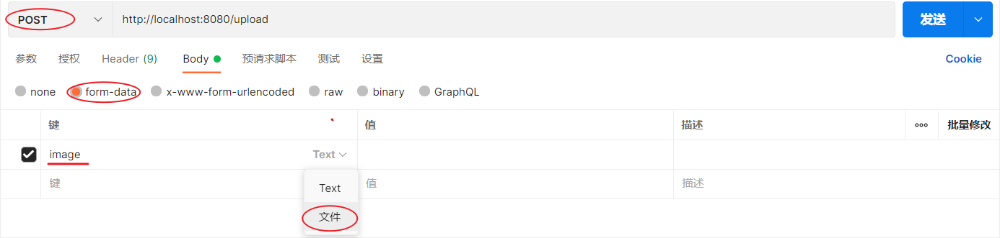
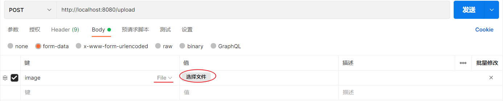
通过postman测试，我们发现文件上传是没有问题的。但是由于我们是使用原始文件名作为所上传文件的存储名字，当我们再次上传一个名为1.jpg文件时，发现会把之前已经上传成功的文件覆盖掉。
解决方案：保证每次上传文件时文件名都唯一的（使用UUID获取随机文件名）
@Slf4j
@RestController
public class UploadController {
@PostMapping("/upload")
public Result upload(String username, Integer age, MultipartFile image) throws IOException {
log.info("文件上传：{},{},{}",username,age,image);
//获取原始文件名
String originalFilename = image.getOriginalFilename();
//构建新的文件名
String extname = originalFilename.substring(originalFilename.lastIndexOf("."));//文件扩展名
String newFileName = UUID.randomUUID().toString()+extname;//随机名+文件扩展名
//将文件存储在服务器的磁盘目录
image.transferTo(new File("E:/images/"+newFileName));
return Result.success();
}
}
在解决了文件名唯一性的问题后，我们再次上传一个较大的文件(超出1M)时发现，后端程序报错：
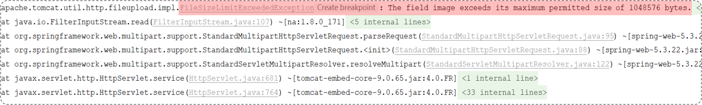
报错原因呢是因为：在SpringBoot中，文件上传时默认单个文件最大大小为1M
那么如果需要上传大文件，可以在application.properties进行如下配置：
#配置单个文件最大上传大小
spring.servlet.multipart.max-file-size=10MB
#配置单个请求最大上传大小(一次请求可以上传多个文件)
spring.servlet.multipart.max-request-size=100MB
到时此，我们文件上传的本地存储方式已完成了。但是这种本地存储方式还存在一问题：
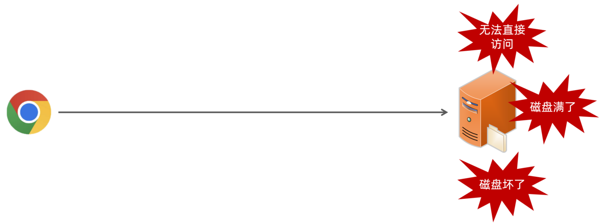
如果直接存储在服务器的磁盘目录中，存在以下缺点：
- 不安全：磁盘如果损坏，所有的文件就会丢失
- 容量有限：如果存储大量的图片，磁盘空间有限(磁盘不可能无限制扩容)
- 无法直接访问
为了解决上述问题呢，通常有两种解决方案：
- 自己搭建存储服务器，如：fastDFS 、MinIO
- 使用现成的云服务，如：阿里云，腾讯云，华为云
2.3 阿里云OSS
2.3.1 准备
阿里云是阿里巴巴集团旗下全球领先的云计算公司，也是国内最大的云服务提供商 。
云服务指的就是通过互联网对外提供的各种各样的服务，比如像：语音服务、短信服务、邮件服务、视频直播服务、文字识别服务、对象存储服务等等。
当我们在项目开发时需要用到某个或某些服务，就不需要自己来开发了，可以直接使用阿里云提供好的这些现成服务就可以了。比如：在项目开发当中，我们要实现一个短信发送的功能，如果我们项目组自己实现，将会非常繁琐，因为你需要和各个运营商进行对接。而此时阿里云完成了和三大运营商对接，并对外提供了一个短信服务。我们项目组只需要调用阿里云提供的短信服务，就可以很方便的来发送短信了。这样就降低了我们项目的开发难度，同时也提高了项目的开发效率。（大白话：别人帮我们实现好了功能，我们只要调用即可）
云服务提供商给我们提供的软件服务通常是需要收取一部分费用的。
阿里云对象存储OSS（Object Storage Service），是一款海量、安全、低成本、高可靠的云存储服务。使用OSS，您可以通过网络随时存储和调用包括文本、图片、音频和视频等在内的各种文件。
在我们使用了阿里云OSS对象存储服务之后，我们的项目当中如果涉及到文件上传这样的业务，在前端进行文件上传并请求到服务端时，在服务器本地磁盘当中就不需要再来存储文件了。我们直接将接收到的文件上传到oss，由 oss帮我们存储和管理，同时阿里云的oss存储服务还保障了我们所存储内容的安全可靠。
那我们学习使用这类云服务，我们主要学习什么呢？其实我们主要学习的是如何在项目当中来使用云服务完成具体的业务功能。而无论使用什么样的云服务，阿里云也好，腾讯云、华为云也罢，在使用第三方的服务时，操作的思路都是一样的。
SDK：Software Development Kit 的缩写，软件开发工具包，包括辅助软件开发的依赖（jar包）、代码示例等，都可以叫做SDK。
简单说，sdk中包含了我们使用第三方云服务时所需要的依赖，以及一些示例代码。我们可以参照sdk所提供的示例代码就可以完成入门程序。
第三方服务使用的通用思路，我们做一个简单介绍之后，接下来我们就来介绍一下我们当前要使用的阿里云oss对象存储服务具体的使用步骤。
Bucket：存储空间是用户用于存储对象（Object，就是文件）的容器，所有的对象都必须隶属于某个存储空间。
下面我们根据之前介绍的使用步骤，完成准备工作：
- 注册阿里云账户（注册完成后需要实名认证）
- 注册完账号之后，就可以登录阿里云
- 通过控制台找到对象存储OSS服务
如果是第一次访问，还需要开通对象存储服务OSS
- 开通OSS服务之后，就可以进入到阿里云对象存储的控制台
- 点击左侧的 “Bucket列表”，创建一个Bucket
大家可以参照"资料\04. 阿里云oss"中提供的文档，开通阿里云OSS服务。
2.3.2 入门
阿里云oss 对象存储服务的准备工作我们已经完成了，接下来我们就来完成第二步操作：参照官方所提供的sdk示例来编写入门程序。
首先我们需要来打开阿里云OSS的官方文档，在官方文档中找到 SDK 的示例代码：
如果是在实际开发当中，我们是需要从前往后仔细的去阅读这一份文档的，但是由于现在是教学，我们就只挑重点的去看。有兴趣的同学大家下来也可以自己去看一下这份官方文档。
参照官方提供的SDK，改造一下，即可实现文件上传功能：
import com.aliyun.oss.ClientException;
import com.aliyun.oss.OSS;
import com.aliyun.oss.OSSClientBuilder;
import com.aliyun.oss.OSSException;
import com.aliyun.oss.model.PutObjectRequest;
import com.aliyun.oss.model.PutObjectResult;
import java.io.FileInputStream;
import java.io.InputStream;
public class AliOssTest {
public static void main(String[] args) throws Exception {
// Endpoint以华东1（杭州）为例，其它Region请按实际情况填写。
String endpoint = "oss-cn-shanghai.aliyuncs.com";
// 阿里云账号AccessKey拥有所有API的访问权限，风险很高。强烈建议您创建并使用RAM用户进行API访问或日常运维，请登录RAM控制台创建RAM用户。
String accessKeyId = "LTAI5t9MZK8iq5T2Av5GLDxX";
String accessKeySecret = "C0IrHzKZGKqU8S7YQcevcotD3Zd5Tc";
// 填写Bucket名称，例如examplebucket。
String bucketName = "web-framework01";
// 填写Object完整路径，完整路径中不能包含Bucket名称，例如exampledir/exampleobject.txt。
String objectName = "1.jpg";
// 填写本地文件的完整路径，例如D:\\localpath\\examplefile.txt。
// 如果未指定本地路径，则默认从示例程序所属项目对应本地路径中上传文件流。
String filePath= "C:\\Users\\Administrator\\Pictures\\1.jpg";
// 创建OSSClient实例。
OSS ossClient = new OSSClientBuilder().build(endpoint, accessKeyId, accessKeySecret);
try {
InputStream inputStream = new FileInputStream(filePath);
// 创建PutObjectRequest对象。
PutObjectRequest putObjectRequest = new PutObjectRequest(bucketName, objectName, inputStream);
// 设置该属性可以返回response。如果不设置，则返回的response为空。
putObjectRequest.setProcess("true");
// 创建PutObject请求。
PutObjectResult result = ossClient.putObject(putObjectRequest);
// 如果上传成功，则返回200。
System.out.println(result.getResponse().getStatusCode());
} catch (OSSException oe) {
System.out.println("Caught an OSSException, which means your request made it to OSS, "
+ "but was rejected with an error response for some reason.");
System.out.println("Error Message:" + oe.getErrorMessage());
System.out.println("Error Code:" + oe.getErrorCode());
System.out.println("Request ID:" + oe.getRequestId());
System.out.println("Host ID:" + oe.getHostId());
} catch (ClientException ce) {
System.out.println("Caught an ClientException, which means the client encountered "
+ "a serious internal problem while trying to communicate with OSS, "
+ "such as not being able to access the network.");
System.out.println("Error Message:" + ce.getMessage());
} finally {
if (ossClient != null) {
ossClient.shutdown();
}
}
}
}
在以上代码中，需要替换的内容为：
- accessKeyId：阿里云账号AccessKey
- accessKeySecret：阿里云账号AccessKey对应的秘钥
- bucketName：Bucket名称
- objectName：对象名称，在Bucket中存储的对象的名称
- filePath：文件路径
AccessKey ：
运行以上程序后，会把本地的文件上传到阿里云OSS服务器上：
2.3.3 集成
阿里云oss对象存储服务的准备工作以及入门程序我们都已经完成了，接下来我们就需要在案例当中集成oss对象存储服务，来存储和管理案例中上传的图片。
在新增员工的时候，上传员工的图像，而之所以需要上传员工的图像，是因为将来我们需要在系统页面当中访问并展示员工的图像。而要想完成这个操作，需要做两件事：
- 需要上传员工的图像，并把图像保存起来（存储到阿里云OSS）
- 访问员工图像（通过图像在阿里云OSS的存储地址访问图像）
- OSS中的每一个文件都会分配一个访问的url，通过这个url就可以访问到存储在阿里云上的图片。所以需要把url返回给前端，这样前端就可以通过url获取到图像。
我们参照接口文档来开发文件上传功能：
-
基本信息
请求路径：/upload 请求方式：POST 接口描述：上传图片接口 -
请求参数
参数格式：multipart/form-data
参数说明：
参数名称 参数类型 是否必须 示例 备注 image file 是 -
响应数据
参数格式：application/json
参数说明：
参数名 类型 是否必须 备注 code number 必须 响应码，1 代表成功，0 代表失败 msg string 非必须 提示信息 data object 非必须 返回的数据，上传图片的访问路径 响应数据样例：
{ "code": 1, "msg": "success", "data": "https://web-framework.oss-cn-hangzhou.aliyuncs.com/2022-09-02-00-27-0400.jpg" }
引入阿里云OSS上传文件工具类（由官方的示例代码改造而来）
import com.aliyun.oss.OSS;
import com.aliyun.oss.OSSClientBuilder;
import org.springframework.stereotype.Component;
import org.springframework.web.multipart.MultipartFile;
import java.io.IOException;
import java.io.InputStream;
import java.util.UUID;
@Component
public class AliOSSUtils {
private String endpoint = "https://oss-cn-shanghai.aliyuncs.com";
private String accessKeyId = "LTAI5t9MZK8iq5T2Av5GLDxX";
private String accessKeySecret = "C0IrHzKZGKqU8S7YQcevcotD3Zd5Tc";
private String bucketName = "web-framework01";
/**
* 实现上传图片到OSS
*/
public String upload(MultipartFile multipartFile) throws IOException {
// 获取上传的文件的输入流
InputStream inputStream = multipartFile.getInputStream();
// 避免文件覆盖
String originalFilename = multipartFile.getOriginalFilename();
String fileName = UUID.randomUUID().toString() + originalFilename.substring(originalFilename.lastIndexOf("."));
//上传文件到 OSS
OSS ossClient = new OSSClientBuilder().build(endpoint, accessKeyId, accessKeySecret);
ossClient.putObject(bucketName, fileName, inputStream);
//文件访问路径
String url = endpoint.split("//")[0] + "//" + bucketName + "." + endpoint.split("//")[1] + "/" + fileName;
// 关闭ossClient
ossClient.shutdown();
return url;// 把上传到oss的路径返回
}
}
修改UploadController代码：
import com.itheima.pojo.Result;
import com.itheima.utils.AliOSSUtils;
import lombok.extern.slf4j.Slf4j;
import org.springframework.beans.factory.annotation.Autowired;
import org.springframework.web.bind.annotation.PostMapping;
import org.springframework.web.bind.annotation.RestController;
import org.springframework.web.multipart.MultipartFile;
import java.io.IOException;
@Slf4j
@RestController
public class UploadController {
@Autowired
private AliOSSUtils aliOSSUtils;
@PostMapping("/upload")
public Result upload(MultipartFile image) throws IOException {
//调用阿里云OSS工具类，将上传上来的文件存入阿里云
String url = aliOSSUtils.upload(image);
//将图片上传完成后的url返回，用于浏览器回显展示
return Result.success(url);
}
}
使用postman测试：
3. 修改员工
需求：修改员工信息
在进行修改员工信息的时候，我们首先先要根据员工的ID查询员工的信息用于页面回显展示，然后用户修改员工数据之后，点击保存按钮，就可以将修改的数据提交到服务端，保存到数据库。 具体操作为：
- 根据ID查询员工信息
- 保存修改的员工信息
3.1 查询回显
3.1.1 接口文档
根据ID查询员工数据
-
基本信息
请求路径：/emps/{id} 请求方式：GET 接口描述：该接口用于根据主键ID查询员工的信息 -
请求参数
参数格式：路径参数
参数说明：
参数名 类型 是否必须 备注 id number 必须 员工ID 请求参数样例：
/emps/1 -
响应数据
参数格式：application/json
参数说明：
名称 类型 是否必须 默认值 备注 code number 必须 响应码, 1 成功 , 0 失败 msg string 非必须 提示信息 data object 必须 返回的数据 |- id number 非必须 id |- username string 非必须 用户名 |- name string 非必须 姓名 |- password string 非必须 密码 |- entrydate string 非必须 入职日期 |- gender number 非必须 性别 , 1 男 ; 2 女 |- image string 非必须 图像 |- job number 非必须 职位, 说明: 1 班主任,2 讲师, 3 学工主管, 4 教研主管, 5 咨询师 |- deptId number 非必须 部门id |- createTime string 非必须 创建时间 |- updateTime string 非必须 更新时间 响应数据样例：
{ "code": 1, "msg": "success", "data": { "id": 2, "username": "zhangwuji", "password": "123456", "name": "张无忌", "gender": 1, "image": "https://web-framework.oss-cn-hangzhou.aliyuncs.com/2022-09-02-00-27-53B.jpg", "job": 2, "entrydate": "2015-01-01", "deptId": 2, "createTime": "2022-09-01T23:06:30", "updateTime": "2022-09-02T00:29:04" } }
3.1.2 实现思路
3.1.3 代码实现
- EmpMapper
@Mapper
public interface EmpMapper {
//根据ID查询员工信息
@Select("select id, username, password, name, gender, image, job, entrydate, dept_id, create_time, update_time " +
"from emp " +
"where id = #{id}")
public Emp findById(Integer id);
//省略...
}
- EmpService
public interface EmpService {
/**
* 根据ID查询员工
* @param id
* @return
*/
public Emp getById(Integer id);
//省略...
}
- EmpServiceImpl
@Slf4j
@Service
public class EmpServiceImpl implements EmpService {
@Autowired
private EmpMapper empMapper;
@Override
public Emp getById(Integer id) {
return empMapper.findById(id);
}
//省略...
}
- EmpController
@Slf4j
@RestController
@RequestMapping("/emps")
public class EmpController {
@Autowired
private EmpService empService;
//根据id查询
@GetMapping("/{id}")
public Result getById(@PathVariable Integer id){
Emp emp = empService.getById(id);
return Result.success(emp);
}
//省略...
}
3.1.4 postman测试
3.2 修改员工
当用户修改完数据之后，点击保存按钮，就需要将数据提交到服务端，然后服务端需要将修改后的数据更新到数据库中。
3.2.1 接口文档
-
基本信息
请求路径：/emps 请求方式：PUT 接口描述：该接口用于修改员工的数据信息 -
请求参数
参数格式：application/json
参数说明：
名称 类型 是否必须 备注 id number 必须 id username string 必须 用户名 name string 必须 姓名 gender number 必须 性别, 说明: 1 男, 2 女 image string 非必须 图像 deptId number 非必须 部门id entrydate string 非必须 入职日期 job number 非必须 职位, 说明: 1 班主任,2 讲师, 3 学工主管, 4 教研主管, 5 咨询师 请求数据样例：
{ "id": 1, "image": "https://web-framework.oss-cn-hangzhou.aliyuncs.com/2022-09-03-07-37-38222.jpg", "username": "linpingzhi", "name": "林平之", "gender": 1, "job": 1, "entrydate": "2022-09-18", "deptId": 1 } -
响应数据
参数格式：application/json
参数说明：
参数名 类型 是否必须 备注 code number 必须 响应码，1 代表成功，0 代表失败 msg string 非必须 提示信息 data object 非必须 返回的数据 响应数据样例：
{ "code":1, "msg":"success", "data":null }
3.2.2 实现思路
3.2.3 代码实现
- EmpMapper
@Mapper
public interface EmpMapper {
//修改员工信息
public void update(Emp emp);
//省略...
}
- EmpMapper.xml
<?xml version="1.0" encoding="UTF-8" ?>
<!DOCTYPE mapper
PUBLIC "-//mybatis.org//DTD Mapper 3.0//EN"
"http://mybatis.org/dtd/mybatis-3-mapper.dtd">
<mapper namespace="com.itheima.mapper.EmpMapper">
<!--更新员工信息-->
<update id="update">
update emp
<set>
<if test="username != null and username != ''">
username = #{username},
</if>
<if test="password != null and password != ''">
password = #{password},
</if>
<if test="name != null and name != ''">
name = #{name},
</if>
<if test="gender != null">
gender = #{gender},
</if>
<if test="image != null and image != ''">
image = #{image},
</if>
<if test="job != null">
job = #{job},
</if>
<if test="entrydate != null">
entrydate = #{entrydate},
</if>
<if test="deptId != null">
dept_id = #{deptId},
</if>
<if test="updateTime != null">
update_time = #{updateTime}
</if>
</set>
where id = #{id}
</update>
<!-- 省略... -->
</mapper>
- EmpService
public interface EmpService {
/**
* 更新员工
* @param emp
*/
public void update(Emp emp);
//省略...
}
- EmpServiceImpl
@Slf4j
@Service
public class EmpServiceImpl implements EmpService {
@Autowired
private EmpMapper empMapper;
@Override
public void update(Emp emp) {
emp.setUpdateTime(LocalDateTime.now()); //更新修改时间为当前时间
empMapper.update(emp);
}
//省略...
}
- EmpController
@Slf4j
@RestController
@RequestMapping("/emps")
public class EmpController {
@Autowired
private EmpService empService;
//修改员工
@PutMapping
public Result update(@RequestBody Emp emp){
empService.update(emp);
return Result.success();
}
//省略...
}
3.2.4 postman测试
3.2.5 前后端联调测试
4. 配置文件
员工管理的增删改查功能我们已开发完成，但在我们所开发的程序中还一些小问题，下面我们就来分析一下当前案例中存在的问题以及如何优化解决。
4.1 参数配置化
在我们之前编写的程序中进行文件上传时，需要调用AliOSSUtils工具类，将文件上传到阿里云OSS对象存储服务当中。而在调用工具类进行文件上传时，需要一些参数：
- endpoint //阿里云OSS域名
- accessKeyID //用户身份ID
- accessKeySecret //用户密钥
- bucketName //存储空间的名字
关于以上的这些阿里云相关配置信息，我们是直接写死在java代码中了(硬编码)，如果我们在做项目时每涉及到一个第三方技术服务，就将其参数硬编码，那么在Java程序中会存在两个问题：
- 如果这些参数发生变化了，就必须在源程序代码中改动这些参数，然后需要重新进行代码的编译，将Java代码编译成class字节码文件再重新运行程序。（比较繁琐）
- 如果我们开发的是一个真实的企业级项目， Java类可能会有很多，如果将这些参数分散的定义在各个Java类当中，我们要修改一个参数值，我们就需要在众多的Java代码当中来定位到对应的位置，再来修改参数，修改完毕之后再重新编译再运行。（参数配置过于分散，是不方便集中的管理和维护）
为了解决以上分析的问题，我们可以将参数配置在配置文件中。如下：
#自定义的阿里云OSS配置信息
aliyun.oss.endpoint=https://oss-cn-hangzhou.aliyuncs.com
aliyun.oss.accessKeyId=LTAI4GCH1vX6DKqJWxd6nEuW
aliyun.oss.accessKeySecret=yBshYweHOpqDuhCArrVHwIiBKpyqSL
aliyun.oss.bucketName=web-tlias
在将阿里云OSS配置参数交给properties配置文件来管理之后，我们的AliOSSUtils工具类就变为以下形式：
@Component
public class AliOSSUtils {
/*以下4个参数没有指定值（默认值：null）*/
private String endpoint;
private String accessKeyId;
private String accessKeySecret;
private String bucketName;
//省略其他代码...
}
而此时如果直接调用AliOSSUtils类当中的upload方法进行文件上传时，这4项参数全部为null，原因是因为并没有给它赋值。
此时我们是不是需要将配置文件当中所配置的属性值读取出来，并分别赋值给AliOSSUtils工具类当中的各个属性呢？那应该怎么做呢？
因为application.properties是springboot项目默认的配置文件，所以springboot程序在启动时会默认读取application.properties配置文件，而我们可以使用一个现成的注解：@Value，获取配置文件中的数据。
@Value 注解通常用于外部配置的属性注入，具体用法为： @Value("${配置文件中的key}”)
@Component
public class AliOSSUtils {
@Value("${aliyun.oss.endpoint}")
private String endpoint;
@Value("${aliyun.oss.accessKeyId}")
private String accessKeyId;
@Value("${aliyun.oss.accessKeySecret}")
private String accessKeySecret;
@Value("${aliyun.oss.bucketName}")
private String bucketName;
//省略其他代码...
}
使用postman测试：
4.2 yml配置文件
前面我们一直使用springboot项目创建完毕后自带的application.properties进行属性的配置，那其实呢，在springboot项目当中是支持多种配置方式的，除了支持properties配置文件以外，还支持另外一种类型的配置文件，就是我们接下来要讲解的yml格式的配置文件。
-
application.properties
server.port=8080 server.address=127.0.0.1 -
application.yml
server: port: 8080 address: 127.0.0.1 -
application.yaml
server: port: 8080 address: 127.0.0.1
yml 格式的配置文件，后缀名有两种：
- yml （推荐）
- yaml
常见配置文件格式对比：
我们可以看到配置同样的数据信息，yml格式的数据有以下特点：
- 容易阅读
- 容易与脚本语言交互
- 以数据为核心，重数据轻格式
简单的了解过springboot所支持的配置文件，以及不同类型配置文件之间的优缺点之后，接下来我们就来了解下yml配置文件的基本语法：
- 大小写敏感
- 数值前边必须有空格，作为分隔符
- 使用缩进表示层级关系，缩进时，不允许使用Tab键，只能用空格（idea中会自动将Tab转换为空格）
- 缩进的空格数目不重要，只要相同层级的元素左侧对齐即可
#表示注释，从这个字符一直到行尾，都会被解析器忽略
了解完yml格式配置文件的基本语法之后，接下来我们再来看下yml文件中常见的数据格式。在这里我们主要介绍最为常见的两类：
- 定义对象或Map集合
- 定义数组、list或set集合
对象/Map集合
user:
name: zhangsan
age: 18
password: 123456
数组/List/Set集合
hobby:
- java
- game
- sport
熟悉完了yml文件的基本语法后，我们修改下之前案例中使用的配置文件，变更为application.yml配置方式：
- 修改application.properties名字为：
_application.properties（名字随便更换，只要加载不到即可） - 创建新的配置文件：
application.yml
原有application.properties文件：
新建的application.yml文件：
spring:
datasource:
driver-class-name: com.mysql.cj.jdbc.Driver
url: jdbc:mysql://localhost:3306/tlias
username: root
password: 1234
servlet:
multipart:
max-file-size: 10MB
max-request-size: 100MB
mybatis:
configuration:
log-impl: org.apache.ibatis.logging.stdout.StdOutImpl
map-underscore-to-camel-case: true
aliyun:
oss:
endpoint: https://oss-cn-hangzhou.aliyuncs.com
accessKeyId: LTAI4GCH1vX6DKqJWxd6nEuW
accessKeySecret: yBshYweHOpqDuhCArrVHwIiBKpyqSL
bucketName: web-397
4.3 @ConfigurationProperties
讲解完了yml配置文件之后，最后再来介绍一个注解@ConfigurationProperties。在介绍注解之前，我们先来看一个场景，分析下代码当中可能存在的问题：
我们在application.properties或者application.yml中配置了阿里云OSS的四项参数之后，如果java程序中需要这四项参数数据，我们直接通过@Value注解来进行注入。这种方式本身没有什么问题问题，==但是如果说需要注入的属性较多(例：需要20多个参数数据)，我们写起来就会比较繁琐==。
那么有没有一种方式可以简化这些配置参数的注入呢？答案是肯定有，在Spring中给我们提供了一种简化方式，可以直接将配置文件中配置项的值自动的注入到对象的属性中。
Spring提供的简化方式套路：
-
需要创建一个实现类，且实体类中的属性名和配置文件当中key的名字必须要一致
比如：配置文件当中叫endpoints，实体类当中的属性也得叫endpoints，另外实体类当中的属性还需要提供 getter / setter方法
-
需要将实体类交给Spring的IOC容器管理，成为IOC容器当中的bean对象
-
在实体类上添加
@ConfigurationProperties注解，并通过perfect属性来指定配置参数项的前缀
实体类：AliOSSProperties
import lombok.Data;
import org.springframework.boot.context.properties.ConfigurationProperties;
import org.springframework.stereotype.Component;
/*阿里云OSS相关配置*/
@Data
@Component
@ConfigurationProperties(prefix = "aliyun.oss")
public class AliOSSProperties {
//区域
private String endpoint;
//身份ID
private String accessKeyId ;
//身份密钥
private String accessKeySecret ;
//存储空间
private String bucketName;
}
AliOSSUtils工具类：
import com.aliyun.oss.OSS;
import com.aliyun.oss.OSSClientBuilder;
import org.springframework.beans.factory.annotation.Autowired;
import org.springframework.stereotype.Component;
import org.springframework.web.multipart.MultipartFile;
import java.io.IOException;
import java.io.InputStream;
import java.util.UUID;
@Component //当前类对象由Spring创建和管理
public class AliOSSUtils {
//注入配置参数实体类对象
@Autowired
private AliOSSProperties aliOSSProperties;
/**
* 实现上传图片到OSS
*/
public String upload(MultipartFile multipartFile) throws IOException {
// 获取上传的文件的输入流
InputStream inputStream = multipartFile.getInputStream();
// 避免文件覆盖
String originalFilename = multipartFile.getOriginalFilename();
String fileName = UUID.randomUUID().toString() + originalFilename.substring(originalFilename.lastIndexOf("."));
//上传文件到 OSS
OSS ossClient = new OSSClientBuilder().build(aliOSSProperties.getEndpoint(),
aliOSSProperties.getAccessKeyId(), aliOSSProperties.getAccessKeySecret());
ossClient.putObject(aliOSSProperties.getBucketName(), fileName, inputStream);
//文件访问路径
String url =aliOSSProperties.getEndpoint().split("//")[0] + "//" + aliOSSProperties.getBucketName() + "." + aliOSSProperties.getEndpoint().split("//")[1] + "/" + fileName;
// 关闭ossClient
ossClient.shutdown();
return url;// 把上传到oss的路径返回
}
}
在我们添加上注解后，会发现idea窗口上面出现一个红色警告：
这个警告提示是告知我们还需要引入一个依赖：
<dependency>
<groupId>org.springframework.boot</groupId>
<artifactId>spring-boot-configuration-processor</artifactId>
</dependency>
当我们在pom.xml文件当中配置了这项依赖之后，我们重新启动服务，大家就会看到在properties或者是yml配置文件当中，就会提示阿里云 OSS 相关的配置项。所以这项依赖它的作用就是会自动的识别被@Configuration Properties注解标识的bean对象。
刚才的红色警告，已经变成了一个灰色的提示，提示我们需要重新运行springboot服务
@ConfigurationProperties注解我们已经介绍完了，接下来我们就来区分一下@ConfigurationProperties注解以及我们前面所介绍的另外一个@Value注解：
相同点：都是用来注入外部配置的属性的。
不同点：
-
@Value注解只能一个一个的进行外部属性的注入。
-
@ConfigurationProperties可以批量的将外部的属性配置注入到bean对象的属性中。
如果要注入的属性非常的多，并且还想做到复用，就可以定义这么一个bean对象。通过 configuration properties 批量的将外部的属性配置直接注入到 bin 对象的属性当中。在其他的类当中，我要想获取到注入进来的属性，我直接注入 bin 对象，然后调用 get 方法，就可以获取到对应的属性值了